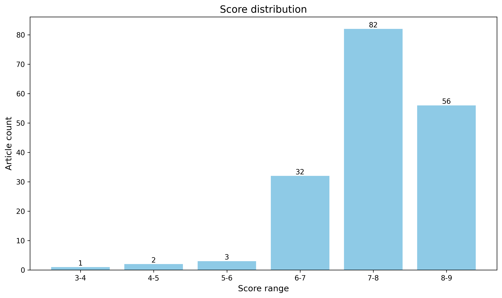

神经科学快讯·第025期 神经科学周报：斑马鱼全脑内感受询问、ERBB4驱动AD病理与软体机器人康复 (2026-08-29)
📊 本周概览
- 头条推荐: 0 篇
- 深度解读: 87 篇
- 简要提及: 69 篇
- 跨界启发: 0 篇
- 已过滤: 128 篇
🌏 环球视野

🌍 国家/地区分布 TOP 10
| 排名 | 国家 | 文章数量 |
|---|---|---|
| 1 | United States | 700 |
| 2 | China | 334 |
| 3 | United Kingdom | 174 |
| 4 | Germany | 129 |
| 5 | Canada | 71 |
| 6 | Switzerland | 70 |
| 7 | France | 55 |
| 8 | Japan | 44 |
| 9 | Australia | 41 |
| 10 | Korea | 39 |
总计: 1657 篇文章
🏢 研究机构 TOP 10
| 排名 | 机构 | 文章数量 |
|---|---|---|
| 1 | Chinese Academy of Sciences | 49 |
| 2 | Stanford University | 37 |
| 3 | University of Oxford | 29 |
| 4 | University of Pennsylvania | 28 |
| 5 | Fudan University | 28 |
| 6 | Tsinghua University | 25 |
| 7 | University of Cambridge | 25 |
| 8 | Peking University | 24 |
| 9 | Howard Hughes Medical Institute | 22 |
| 10 | University College London | 22 |
📊 评分分布
| 评分区间 | 文章数量 |
|---|---|
| 3-4 | 1 |
| 4-5 | 2 |
| 5-6 | 3 |
| 6-7 | 32 |
| 7-8 | 82 |
| 8-9 | 56 |
总计: 176 篇评分文章
📈 各领域文章分布
| 领域 | 深度解读 | 简要提及 | 总计 |
|---|---|---|---|
| 未知领域 | 0 | 51 | 51 |
| 系统与环路神经科学 | 27 | 3 | 30 |
| 分子与细胞神经科学 | 20 | 2 | 22 |
| 感觉与运动神经科学 | 12 | 6 | 18 |
| 认知神经科学 | 9 | 4 | 13 |
| 临床与转化神经科学 | 7 | 2 | 9 |
| 发育神经科学 | 5 | 1 | 6 |
| 方法学 | 3 | 0 | 3 |
| 社会与情感神经科学 | 2 | 0 | 2 |
| 计算与理论神经科学 | 2 | 0 | 2 |
合计: 深度解读 87 篇，简要提及 69 篇，共 156 篇
📚 精选文献（按领域分类）
临床与转化神经科学
中文标题: 异常兴奋性神经元ERBB4促进阿尔茨海默病病理
作者: Se Young Lee, Eunseok Park, Won-Suk Chung
关键词: 阿尔茨海默病, ERBB4, 单核RNA测序, 突触吞噬, 小胶质细胞, 星形胶质细胞
亮点: 发现兴奋性神经元中异常表达的ERBB4是阿尔茨海默病病理的早期驱动因素，并通过mTOR信号级联调控突触丢失和胶质细胞反应。
核心优势: 多模态证据链清晰，从单核转录组、基因操控到人类数据中介分析，系统证明了ERBB4在AD中的必要性与充分性。
研究局限: 主要依赖小鼠模型，人类数据仅提供相关性支持，缺乏直接因果验证；ERBB4在正常生理条件下的功能尚未完全阐明。
目标读者: 阿尔茨海默病研究者、神经炎症与突触生物学领域科学家、分子神经科学家及药物研发人员。
推荐理由: 该研究揭示了兴奋性神经元ERBB4信号异常在阿尔茨海默病病理中的核心作用，从单核转录组层面发现早期突触丢失的胶质细胞吞噬机制，挑战了以神经炎症为早期驱动事件的传统观点。研究结合多组学与功能验证，为AD的治疗干预提供了新的分子靶点，对理解神经炎症、突触稳态与认知衰退的因果链条具有重要价值。
中文标题: 使用软体机器人支持臂丛神经损伤后的上肢运动
作者: Roberto Ferroni, Vittoria Aglietta, Tommaso Proietti
关键词: 软机器人, 上肢运动, 臂丛损伤, 运动康复, 神经修复, 临床转化
亮点: 软机器人辅助上肢运动为臂丛神经损伤康复提供创新干预方案
核心优势: 结合软机器人技术与神经康复需求，设计出可穿戴、柔顺的运动辅助系统，可能为临床康复提供新工具。
研究局限: 基于标题和摘要的信息有限，具体临床效果和神经机制证据尚不明确，可能缺少大规模临床试验验证。
目标读者: 神经康复工程、软体机器人、神经修复和物理治疗领域的研究者与临床医生
推荐理由: 臂丛神经损伤导致的上肢运动障碍严重影响患者生活质量，传统康复手段效果有限。本研究提出一种软体机器人辅助方案，通过柔性驱动支持上肢运动，为神经损伤后的运动功能重建提供了新的技术路径。该工作结合机械工程与神经康复，展示了软机器人在促进神经可塑性和功能性恢复中的潜力，对临床转化神经科学具有重要借鉴意义。
Targeting tumour–neuron synapses with intracavitary RNA delivery prevents glioblastoma recurrence
深度解读 8.0/10中文标题: 靶向肿瘤-神经元突触的腔内RNA递送可预防胶质母细胞瘤复发
作者: Zhi Li, Zhao-Zhe Hao, Yonggao Mou
资深研究者: Zhi Li (h指数=72)
关键词: 胶质母细胞瘤, 肿瘤-神经元突触, TrkB, RNA递送, 空间转录组, 人类标本
亮点: 靶向肿瘤-神经元突触，创新腔内RNA递送策略为胶质母细胞瘤复发提供新疗法
核心优势: 结合人类标本空间转录组与多响应水凝胶递送siRNA，精准沉默TrkB，显著延长生存并改善神经认知功能
研究局限: 尚缺乏临床验证，TrkB长期抑制对正常突触功能的影响及水凝胶安全性需进一步研究
目标读者: 神经肿瘤学家、癌症生物学家、神经科学家、药物递送与RNA治疗研究者
推荐理由: 这项研究通过空间转录组分析完整人胶质母细胞瘤标本，揭示了肿瘤-大脑界面恶性突触的形成机制，并锁定TrkB为关键治疗靶点。作者开发了腔内RNA递送策略局部抑制TrkB，在有效阻断肿瘤复发的同时避免了系统性神经毒性，为神经肿瘤治疗提供了新范式。该工作将肿瘤生物学与突触神经科学紧密融合，展示了神经科学原理在癌症中的转化价值。
中文标题: 可穿戴声流体贴片用于快速逆转阿片类药物过量
作者: Yantao Xing, Yang Yang, Feng Guo
资深研究者: Yang Yang (h指数=162)
关键词: 可穿戴设备, 声流控, 经皮给药, 纳洛酮, 阿片类药物过量
亮点: 可穿戴声流控贴片为阿片过量提供快速无针解毒新策略
核心优势: 将声流控技术与可穿戴平台结合，实现即时透皮药物递送，有望替代传统注射方式。
研究局限: 摘要信息有限，缺乏体内药效和安全性数据的明确描述，与传统纳洛酮治疗的对比证据尚不充分。
目标读者: 神经药理学、生物医学工程、急救医学和药物滥用研究学者
推荐理由: 该研究开发了一种可穿戴声流控贴片，利用超声介导的微流控技术实现纳洛酮的快速经皮递送，为阿片类药物过量提供即时干预手段。对于神经科学领域而言，这一技术不仅解决了药物入脑的给药瓶颈，还拓展了神经药理学与急救医学的交叉边界，有望在院前环境中显著降低阿片类致死率。其无创、便携和快速起效的特征，为中枢神经系统疾病的按需治疗提供了转化新范式。
中文标题: 基于EEG的氯胺酮对映体和代谢物在猴子中的抗抑郁效果评估
作者: Pinkley N
关键词: EEG, 氯胺酮, 抗抑郁, 非人灵长类, 药物评估
亮点: 在非人灵长类模型中基于EEG系统比较氯胺酮对映体及代谢物的神经动力学效应
核心优势: 使用近似人类的灵长类模型和EEG指标评估氯胺酮各组分，为抗抑郁机制和临床优化提供高转化价值的药理学证据。
研究局限: 摘要信息不完整，难以确认实验设计细节、样本量和统计功效，且EEG与行为/临床表型的关联尚待明确。
目标读者: 精神药理学、神经生理学、系统神经科学以及氯胺酮临床转化研究者
推荐理由: 该研究利用EEG在非人灵长类中系统比较氯胺酮对映体及其代谢物的抗抑郁效应，为理解快速抗抑郁机制提供了临床前电生理证据，并有望推动优化给药策略。其将脑电指标与行为学相关联的方法学设计，对转化神经科学和抗抑郁药物研发具有重要参考价值。
中文标题: 追踪阿尔茨海默病连续体中tau蛋白与抑郁症状的连续时间动态
作者: Markova TZ, Heston MB, Berry AS et al.
关键词: 阿尔茨海默病, tau蛋白, 抑郁症状, 纵向研究, 连续时间动态, 人类
亮点: 结合连续时间动态建模，揭示阿尔茨海默病进程中tau蛋白与抑郁症状的时序关联
核心优势: 利用ADNI纵向数据，首次在连续时间框架下刻画tau病理与抑郁症状的动态演变关系
研究局限: 观察性设计无法确立因果，且依赖抑郁量表和tau-PET的测量精度，结果需在不同人群中验证
目标读者: 神经科学、老年精神病学、神经影像学及计算精神医学研究者
推荐理由: 本研究在阿尔茨海默病连续谱中，利用连续时间动态模型同时追踪tau蛋白病理与抑郁症状的变化轨迹，揭示了二者在疾病进程中的时序与关联。这一方法突破传统离散随访的局限，为理解AD的临床表型演变和潜在干预时窗提供了新视角。
Wireless IoT-enabled microneedle electroceutical for personalized and connected pain management
深度解读 7.1/10中文标题: 无线物联网微针电疗设备用于个性化且互联的疼痛管理
作者: Heesoo Kim, Se Kyun Bang, Jae-Woong Jeong
关键词: 微针电刺激, 物联网, 疼痛管理, 可穿戴设备, 无线传输, 电刺激
亮点: 无线物联网微针电神经调节装置实现个性化、连接的疼痛管理
核心优势: 将微针、电神经调节与物联网集成，为可穿戴神经调控提供新的闭环个性化可能性
研究局限: 基于摘要信息，体内验证和临床转化程度不明确，神经机制层面的证据相对有限
目标读者: 神经调控、可穿戴医疗设备、疼痛研究和生物电子医学研究者
推荐理由: 该研究将微针电刺激与物联网技术结合，构建了面向个性化及远程疼痛管理的无线可穿戴系统。其闭环反馈与实时数据传输能力为神经调控提供了新的工程范式，尤其适用于慢性疼痛的长期监测与动态干预，对临床转化和数字医疗具有重要启发意义。
中文标题: 替尔泊肽与GLP-1受体激动剂及房颤合并2型糖尿病患者卒中风险比较
作者: Chih-Lang Lin, Kuan-Chou Lin, Szu-Yuan Wu
摘要: 针对房颤合并2型糖尿病患者，比较替尔泊肽与GLP-1受体激动剂的卒中风险差异。
优势: 基于真实世界数据，为心脑血管并发症高风险人群的降糖方案选择提供直接临床证据。 局限: 观察性研究设计可能存在残余混杂，且未提供卒中严重程度等细节。 受众: 心血管医生、内分泌/糖尿病医生、神经内科医生，涉及卒中预防的临床研究者。
中文标题: 乌干达、肯尼亚、埃塞俄比亚和南非医院招募成年人中重度抑郁症的危险因素
作者: Allan Kalungi, Wilber Ssembajjwe, Dickens H. Akena
摘要: 非洲多国医院样本中的抑郁症风险因素横断面分析
优势: 覆盖多个非洲国家医院场景，弥补该地区抑郁症风险因素数据的不足。 局限: 观察性设计，无法确立因果关系，且样本来自医院可能引入选择偏倚。 受众: 全球精神卫生、流行病学及非洲地区精神健康政策研究者
分子与细胞神经科学
Autism mutations rewire protein interaction networks to drive neurodevelopmental pathology.
深度解读 8.7/10中文标题: 自闭症突变重塑蛋白质相互作用网络驱动神经发育病理
作者: Wang B, Vartak R, Hennick KM et al.
关键词: 自闭症, 互作网络, 神经发育, 基因突变, 蛋白质组学, 小鼠
亮点: 从蛋白质互作网络重连视角系统揭示自闭症突变驱动神经发育病理的分子机制
核心优势: 结合大规模互作组学与神经发育模型，揭示了自闭症风险基因突变通过重塑蛋白网络而非单基因效应导致病理的新范式。
研究局限: 由于信息有限，尚不明确是否涵盖体内生理条件下的动态网络验证，以及是否针对特定发育阶段或细胞类型具有特异性。
目标读者: 分子神经科学、发育神经生物学、蛋白质组学与计算生物学研究者
推荐理由: 这项研究揭示了自闭症相关突变并非孤立地影响单个蛋白，而是重连了蛋白质相互作用网络，从而驱动神经发育病理。通过结合蛋白质组学和网络分析，作者描绘了突变如何扰动关键信号通路和突触复合物，为理解自闭症的分子异质性提供了系统层面的新视角，也为治疗靶点发现提供了重要资源。
中文标题: 自噬在脑稳态和疾病中的作用
作者: Henry Kim, Edward S. Wickstead, Zhenyu Yue
关键词: 自噬, 溶酶体, 神经元, 胶质细胞, 神经退行性疾病, 脑稳态
亮点: 系统整合自噬在脑稳态与疾病中的最新进展，指明治疗靶点。
核心优势: 由领域权威撰写的全面、及时综述，涵盖从基础机制到临床转化的完整图景。
研究局限: 作为综述，未能提供新的实验数据，部分推测性观点有待实证支持。
目标读者: 神经科学、细胞生物学、神经退行性疾病和转化医学研究者
推荐理由: 该综述系统阐述了自噬在脑稳态维持与疾病发生中的核心作用，涵盖神经元和胶质细胞中自噬的细胞生物学机制、与膜运输通路的交互，以及自噬基因变异与神经发育及退行性疾病的关联。对从事分子细胞神经科学和转化研究的读者而言，这是一份深度整合基础机制与临床病理的权威参考。
中文标题: 运动作为类淋巴功能的调节因子
作者: James R. Broatch, Nicholas J. Saner, Melinda L. Jackson et al.
资深研究者: James R. Broatch (h指数=19); Nicholas J. Saner (h指数=16)
关键词: 运动干预, 类淋巴系统, 神经退行性疾病, 脑脊液, 胶质细胞, 跨物种
亮点: 系统整合运动生理学与类淋巴清除机制，提出运动增强脑废物清除的新框架
核心优势: 首次将类淋巴功能调节因子与运动生理适应进行系统性趋同分析，为理解运动神经保护作用提供整合机制模型
研究局限: 作为综述，主要依赖现有研究，且人类证据相对有限，机制框架的具体因果关系仍需实验验证
目标读者: 神经科学、运动科学、老年医学及神经退行性疾病转化研究者
推荐理由: 这篇综述系统梳理了运动通过调节类淋巴系统影响脑内废物清除的证据，将运动神经保护作用与类淋巴清除功能的分子、细胞和系统机制联系起来。文章整合了动物模型与人类研究，讨论了类淋巴系统在衰老和神经退行性病理中的脆弱性，并指出了运动作为非药物干预的潜在靶点。对于致力于理解脑内稳态维持和神经退行性疾病机制的神经科学读者，本文提供了很好的概念框架和未来研究方向。
Circadian temperature compensation is intrinsically linked with metabolism and redox signaling
深度解读 8.2/10中文标题: 昼夜节律温度补偿本质上与代谢和氧化还原信号相关
作者: Yao Xu, Tetsuya Mori, Carl Hirschie Johnson
关键词: 昼夜节律, 温度补偿, 代谢调控, 氧化还原信号, 遗传筛选, 生物钟
亮点: 首次揭示温度补偿与代谢及氧化还原信号的内在且跨物种保守的机制联系
核心优势: 将长期未解的昼夜节律温度补偿机制与代谢和氧化还原信号直接关联，并展示保守性，为传统问题提供了全新视角。
研究局限: 摘要未提供具体实验细节，可能缺乏对神经系统的直接阐述，且机制是否适用于所有生物钟尚需验证。
目标读者: 昼夜节律生物学、代谢与氧化还原信号、系统生物学及计算神经科学研究者
推荐理由: 本研究通过遗传筛选揭示了昼夜节律温度补偿与细胞代谢、氧化还原信号之间的内在耦合，破解了半个世纪来生物钟领域的关键谜题——温度无关性如何实现。研究不仅提出了代谢与活性氧参与温度补偿的新模型，还为理解生物钟在不同环境下的稳健性提供了分子层面的机制解释，对神经科学中节律调控、代谢互作和神经退行性疾病研究均有重要启示。
Myelination sustains axonal bioenergetics by storing and consuming oxygen for aerobic metabolism.
深度解读 8.2/10中文标题: 髓鞘形成通过储存和消耗氧气维持有氧代谢，从而支持轴突生物能量学
作者: Panfoli I, Candiano G, Bruschi M
关键词: 髓鞘, 轴突, 氧气稳态, 有氧代谢, 生物能量学, 代谢成像
亮点: 提出髓鞘储存氧气并支持轴突有氧代谢的新假说，扩展了髓鞘的传统绝缘功能
核心优势: 以新颖的视角整合髓鞘和轴突能量代谢，具有重要的理论突破潜力
研究局限: 目前为假说性论述，缺乏直接的实验证据支持，需进一步验证
目标读者: 神经科学、神经胶质生物学、线粒体代谢和神经病理学研究者
推荐理由: 该研究揭示了髓鞘除绝缘功能外，还能通过储存和消耗氧气为轴突有氧代谢提供能量支持，颠覆了传统对髓鞘被动保护角色的认知。这一发现不仅为轴突能量供应机制提供了新的分子与细胞基础，也可能解释脱髓鞘疾病中轴突变性的能量代谢障碍，具有重要的生理病理意义。
中文标题: 灵长类大脑脑回-脑沟特化的细胞和分子基础
作者: Yiqin Bai, Tao Song, Yidi Sun
资深研究者: Yidi Sun (h指数=28)
关键词: 单细胞测序, 灵长类, 大脑皮层, 沟回, 基因表达, 进化
亮点: 揭示灵长类大脑沟回特化的细胞和分子基础，为理解皮层折叠提供新视角
核心优势: 系统解析了沟回区域特化的分子和细胞特征，填补了灵长类脑结构功能研究的空白。
研究局限: 摘要信息缺失，难以全面评估实验设计与证据强度；且研究局限于灵长类，机制普适性未验证。
目标读者: 神经解剖学家、发育神经生物学家、灵长类脑进化研究者、计算神经科学家
推荐理由: 该研究首次在灵长类大脑沟回区域解析细胞与分子特化机制，揭示了沟回形成过程中的关键基因调控网络和细胞类型差异。通过高精度单细胞测序与空间分析，为理解大脑皮层复杂折叠的进化起源及发育异常提供了全新视角。对神经科学领域具有重要理论价值，也为跨物种比较研究奠定了基础。
中文标题: 通过细胞外囊泡递送工程化自噬受体清除病理性Tau和TDP-43
作者: Huishan Guo, Alexandre Savard, Derrick Gibbings
资深研究者: Derrick Gibbings (h指数=20)
关键词: 自噬受体, 细胞外囊泡, Tau蛋白, TDP-43, 神经退行性疾病, 蛋白质稳态
亮点: 利用工程化自噬受体与细胞外囊泡递送，实现对病理Tau和TDP-43的特异性清除
核心优势: 结合抗体特异性和自噬降解机制，通过细胞外囊泡穿越血脑屏障，在多种神经退行性疾病模型中有效清除病理蛋白。
研究局限: 目前仅在细胞和小鼠模型中验证，缺乏非人灵长类或人类数据，长期安全性与免疫原性尚待评估。
目标读者: 神经退行性疾病研究者、药物递送和基因治疗领域、自噬生物学研究者
推荐理由: 该研究巧妙地将LC3A自噬受体与胞质稳定抗体融合，并借助细胞外囊泡实现跨血脑屏障和细胞膜递送，精准识别并清除病理性Tau和TDP-43聚集体。这一策略不仅解决了蛋白清除中的多重递送难题，还为额颞叶痴呆和肌萎缩侧索硬化提供了全新的治疗思路，具有重要的转化潜力。
中文标题: 人神经元中精神疾病风险位点的动态神经免疫调节
作者: Kayla G. Retallick-Townsley, Seoyeon Lee, Kristen J. Brennand
关键词: MPRA, 人类神经元, 神经免疫, 精神疾病, 等位基因特异性, 基因调控
亮点: 在人类神经元中首次系统刻画炎症因子与精神疾病风险位点之间的动态基因型-环境相互作用
核心优势: 利用cue-specific MPRA在hiPSC来源的谷氨酸能神经元中识别大量等位基因特异性与变异-细胞因子交互效应，揭示神经免疫调控的多效性机制。
研究局限: 缺乏功能性扰动实验验证因果性，且仅覆盖两种细胞因子和一种神经元类型，外推性有限。
目标读者: 精神疾病遗传学、神经免疫学、神经基因组学及疾病机制研究者
推荐理由: 该研究通过神经元特异性大规模平行报告分析，系统解析了炎症信号对精神疾病风险位点等位基因活性的动态调节，揭示了基因型-环境相互作用的分子基础。工作将GWAS关联与功能性调控机制衔接，为理解免疫环境如何影响神经发育及精神疾病风险提供了高分辨率证据，也为同类风险位点的功能注释提供了可扩展的策略。
中文标题: 软脑膜成纤维细胞通过调节脑脊液动力学促进胶质母细胞瘤进展
作者: Maoyuan Sun, Shan Jiang, Zhifeng Shi
关键词: 胶质母细胞瘤, 软脑膜成纤维细胞, 脑脊液运输, 单细胞测序, 纤维化, NF-κB
亮点: 揭示软脑膜成纤维细胞通过调控脑脊液动力学促进胶质母细胞瘤进展的新机制，并提出NF-κB为治疗靶点
核心优势: 首次将脑脊液动力学与软脑膜纤维化及胶质母细胞瘤免疫微环境联系起来，并通过谱系追踪和单细胞分析明确细胞来源，提供了多层面的证据链
研究局限: 研究主要基于雄性小鼠模型，缺乏人类样本或临床相关模型验证，且NF-κB抑制的长期效应和安全性未评估
目标读者: 胶质瘤研究者、神经肿瘤学、细胞外基质生物学、免疫治疗及脑脊液动力学专家
推荐理由: 本研究揭示胶质母细胞瘤通过激活软脑膜成纤维细胞中的NF-κB信号，诱导血管周围纤维化，进而损害脑脊液流动与代谢废物清除，促进肿瘤进展。利用谱系追踪和单细胞测序精确定位纤维化细胞来源，为理解脑肿瘤与脑脊液系统的相互作用提供了新视角，并提出了潜在的治疗干预靶点。
中文标题: 肠嗜铬细胞作为细胞整合枢纽，协同微生物信号调节肠道血清素和运动
作者: Xiao Y, Louwies T, Mars RAT et al.
关键词: 肠嗜铬细胞, 血清素, 肠道菌群, 肠脑轴, 信号整合, 小鼠
亮点: 揭示肠嗜铬细胞作为微生物信号整合枢纽，调控肠道血清素与运动性的新机制
核心优势: 提出肠嗜铬细胞作为细胞整合枢纽的概念，连接微生物群与宿主神经递质和肠道功能，具有重要的机制新颖性。
研究局限: 未提供具体实验细节，难以全面评估方法严谨性；可能需要更多跨模型验证以确认普遍性。
目标读者: 神经科学、肠道微生物组学、胃肠生理学和细胞信号转导研究人员
推荐理由: 该研究揭示肠嗜铬细胞（EC细胞）作为信号整合枢纽，能够协同感知多种微生物代谢物，并通过内源性血清素合成调控肠道运动。这一发现将微生物组-肠上皮信号与神经内分泌功能直接联系起来，为肠脑轴研究提供了新的细胞机制。对理解血清素系统在胃肠道疾病、代谢和应激中的作用具有重要价值。
中文标题: 少突胶质细胞谱系发育的细胞自主区域差异及其对肿瘤组蛋白H3.3 K27M的响应
作者: Jared M. Andrews, Kaitlin M. Budd, Suzanne J. Baker
关键词: 少突胶质细胞, 组蛋白突变, 条件敲入, 组织透明化, 区域差异, 脑肿瘤
亮点: 揭示胶质细胞谱系发育的内在区域差异如何被致癌组蛋白突变劫持，解释DMG脑干选择性起源
核心优势: 结合体内谱系示踪与体外区域对比，证明K27M利用脑干OPC固有的发育延迟和分化阻滞窗口，引发区域特异性的肿瘤易感性
研究局限: 机制研究局限于小鼠模型和离体培养，尚未在人类样本中验证；且K27M的具体下游靶点和调控网络仍需更深入解析
目标读者: 肿瘤神经科学、胶质细胞发育生物学、表观遗传学和儿科肿瘤研究者
推荐理由: 该研究利用条件性H3.3 K27M敲入小鼠，结合全脑组织透明化与EdU标记，揭示了少突胶质细胞谱系发育的区域内在差异，并证明该组蛋白突变以细胞自主方式抑制分化、促进增殖，为弥漫性中线胶质瘤的解剖选择性提供了新机制。工作将发育神经科学与肿瘤生物学桥接，对理解胶质瘤起源和区域易感性具有重要意义。
中文标题: 大麻素耐受性依赖于NEDD4L介导的CB1受体泛素化
作者: Álvaro-Blázquez A, Rodrigues RS, Montero-Fernández C et al.
关键词: CB1受体, 泛素化, NEDD4L, 小鼠, 药物耐受性, 分子机制
亮点: 揭示NEDD4L介导的CB1受体泛素化作为大麻素耐受的关键分子机制
核心优势: 首次将CB1受体泛素化与大麻素耐受直接关联，提出耐受性的新型调控通路。
研究局限: 缺乏摘要细节，难以全面评估体内证据强度和跨模型验证程度。
目标读者: 大麻素信号研究、神经药理学、蛋白泛素化及成瘾机制研究者
推荐理由: 该研究发现大麻素耐受性依赖于CB1受体通过NEDD4L进行的泛素化修饰，揭示了受体降解在耐受形成中的关键作用。这一机制洞察不仅加深了对内源性大麻素系统调控的理解，还为开发慢性大麻素药物使用的干预策略提供了新靶点，对疼痛治疗和成瘾干预具有转化意义。
中文标题: 楔形结构域的状态依赖性结合控制机械敏感离子通道PIEZO1的失活
作者: Lucas Roettger, Nadja Zeitzschel, Stefan G. Lechner
关键词: PIEZO1, 机械转导, 失活机制, 电生理, MINFLUX, 定点突变
亮点: 揭示PIEZO1楔形结构域作为状态依赖性失活颗粒的新机制
核心优势: 结合电生理、定点突变与MINFLUX纳米显微技术，提供了wedge域控制PIEZO1失活的直接结构-功能证据
研究局限: 主要基于体外异源表达系统，尚需在体内生理条件下验证；MINFLUX的分辨率限制与间接推论需更多别构方法支持
目标读者: 机械转导、离子通道生理学、结构生物学和力学生物学研究者
推荐理由: 该研究通过结合定点突变、电生理记录和MINFLUX纳米显微镜，揭示了PIEZO1快速失活的新机制，特别是细胞内wedge结构域的状态依赖结合模式。这不仅深化了对机械敏感离子通道门控动力学的理解，也为研究离子通道失活的结构机制提供了创新性的方法范例，对机械转导与通道调控研究者具有重要启示。
中文标题: 成年前脑兴奋性神经元中Ank3缺失扰乱行为、神经元活动、膜蛋白质组和髓鞘形成
作者: Yoon S, Santos MD, Khalatyan N et al.
关键词: Ank3, 兴奋性神经元, 膜蛋白组, 髓鞘形成, 行为学, 电生理
亮点: 首次揭示成年期前脑兴奋性神经元中Ank3缺失的多维度后果，将疾病基因与行为、活动、蛋白质组及髓鞘化联系起来
核心优势: 多模态整合研究，从行为、电生理、蛋白质组到髓鞘结构系统验证，证据链完整且相互印证
研究局限: 主要依赖单一基因敲除模型，缺乏神经元与胶质细胞相互作用的直接机制解构，且未涉及人类样本验证
目标读者: 精神疾病遗传学、神经环路、蛋白质组学和髓鞘生物学研究者
推荐理由: 这项研究揭示了成人前脑兴奋性神经元中Ank3缺失如何通过重塑膜蛋白组，导致神经元活动异常、行为缺陷及髓鞘形成障碍。研究整合了分子生物学、电生理和行为学方法，为理解Ank3在精神疾病中的风险作用提供了机制层面的新视角，并提示神经元-胶质细胞互作在其中的潜在贡献。
中文标题: WNK依赖性gephyrin磷酸化微调抑制性突触的GABA(A)受体并调节焦虑行为
作者: Merlaud Z, Delhaye C, Nabais M et al.
关键词: 磷酸化, gephyrin, GABAA受体, 抑制性突触, 焦虑行为, 小鼠模型
亮点: 揭示WNK激酶通过磷酸化gephyrin调节抑制性突触GABA(A)受体功能及焦虑行为的新机制
核心优势: 结合分子、突触和行为学证据，发现WNK依赖的gephyrin磷酸化是调节GABA(A)受体聚集和焦虑行为的关键信号通路。
研究局限: 未能提供详细的实验方法和统计信息，且可能仅基于单一模型系统，其泛化性和生理病理意义有待进一步验证。
目标读者: 突触神经生物学、受体信号转导和行为神经科学研究人员
推荐理由: 本研究通过磷酸化位点突变、电生理记录和行为学实验，揭示了WNK激酶以磷酸化依赖方式调控抑制性突触支架蛋白gephyrin，进而影响GABAA受体的突触聚集与焦虑样行为。这一发现将WNK信号通路与GABA能突触可塑性和情感障碍机制直接相连，为焦虑症的分子干预提供了新靶点，也为理解磷酸化在突触组装中的动态调控提供了范例。
中文标题: 衰老限制小鼠视网膜中胶质细胞产生神经元再生的能力
作者: Deka J, Han Y, Bhattacharya S et al.
关键词: 视网膜, 衰老, 神经再生, 胶质细胞, 谱系追踪, 小鼠
亮点: 揭示衰老如何限制视网膜胶质细胞重编程为神经元的潜力，为年龄相关再生障碍提供新见解。
核心优势: 针对衰老这一关键生物学变量，系统地评估了胶质细胞源性再生的年龄依赖性限制，结合遗传谱系追踪与功能分析。
研究局限: 基于小鼠视网膜模型，尚未覆盖人类样本或其他组织，机制解析深度可能有限。
目标读者: 发育神经生物学、视网膜再生医学、衰老生物学及细胞重编程研究者
推荐理由: 该研究系统解析了衰老对视网膜胶质细胞神经元再生的限制作用，揭示了年龄相关的分子通路如何阻断胶质-神经元转化。通过谱系追踪和功能实验，作者证明衰老环境中的特定信号改变是再生失败的关键。这一发现不仅增进了对神经再生调控机制的理解，也为开发基于胶质细胞重编程的衰老视网膜修复策略提供了新靶点。
中文标题: 大脑增大带来新型神经元：人类新皮层纺锤体神经元的分子与功能特征
作者: Karri Lamsa, Viktor Szegedi
资深研究者: Viktor Szegedi (h指数=21)
关键词: 人类, 新皮层, 纺锤体神经元, 单细胞测序, 电生理, 进化
亮点: 透过最新多模态数据阐释人类新皮层纺锤体神经元作为独特细胞类型，揭示大脑进化增加回路复杂性的新维度
核心优势: 及时解读并传播最新研究成果，优先呈现人类特异神经元的关键分子与功能证据，具备高时效性和清晰的可读性
研究局限: 作为评论性文章，主要围绕单一研究展开，缺乏更广泛的横向比较和系统综述，指导性与全面性有限
目标读者: 神经科学、进化神经生物学及细胞分类学研究者，关注人类皮层特异神经元类型的科学家
推荐理由: 该研究利用人类神经外科组织，通过多模态分析首次确立了纺锤体神经元作为分子特征明确、功能特化的皮层细胞类型。研究不仅揭示了脑进化中新增神经元类型如何扩展回路复杂度，也为理解灵长类特化认知功能提供了关键的细胞生物学基础，是进化神经科学与分子病理学交叉的重要进展。
Defining the Early Response of Oligodendrocyte-Lineage Cells to Traumatic CNS Axonal Injury.
深度解读 7.3/10中文标题: 定义少突胶质细胞谱系对创伤性中枢神经系统轴突损伤的早期反应
作者: Wu Y, Ding X, Li J et al.
关键词: 少突胶质细胞, 轴突损伤, 基因表达, 小鼠, 神经炎症, 损伤早期
亮点: 从时间维度刻画少突胶质细胞谱系对轴突损伤的早期应答特征
核心优势: 聚焦损伤后早期时间窗，可能揭示少突胶质前体细胞快速响应机制
研究局限: 基于标题和期刊信息判断，缺乏摘要细节，难以评估方法学创新和证据强度
目标读者: 神经损伤与修复、胶质细胞生物学和神经免疫学研究者
推荐理由: 该研究系统描绘了少突胶质细胞谱系在中枢神经系统轴突损伤早期的动态分子响应，揭示了这些细胞从稳态到反应状态转变的关键信号通路。通过精细的时程分析，为理解白质损伤后胶质细胞的异质性反应提供了新视角，也为神经修复策略的开发提供了潜在靶点。
中文标题: 氯离子在血清素转运中的作用
作者: Huang J, Backer A, Uchendu S et al.
关键词: 血清素转运, 氯离子, 分子机制, 离子梯度, 神经递质
亮点: 揭示氯离子结合与血清素转运偶联的结构-功能新机制
核心优势: 将氯离子置于血清素转运调控的核心位置，可能为抗抑郁靶点提供新见解。
研究局限: 摘要信息有限，缺乏体内功能验证和跨物种保守性证据。
目标读者: 神经递质转运体研究者、结构生物学家、分子药理学家
推荐理由: 这项研究聚焦氯离子对血清素转运体工作的调控机制，揭示了血清素再摄取过程中氯离子浓度梯度的关键作用。通过构建更接近生理状态的转运模型，作者阐明氯离子不仅作为共底物参与运输，还可能调节转运体的构象状态和底物亲和力。这对理解大脑内血清素系统的精细调控，以及为何改变离子环境会影响抗抑郁药效，提供了重要的分子基础。
中文标题: 回复Panfoli等人：从髓鞘中的O(2)消耗到轴突中缝隙连接ATP传递：需要进一步审视的能量联系
作者: Witschas K, Ghysels A, Leybaert L
关键词: 能量代谢, 髓鞘, 轴突, 间隙连接, ATP传递, 胶质细胞
亮点: 对髓鞘能量代谢假说进行严谨批判，强调O2消耗与轴突ATP传递因果关系亟需进一步证据。
核心优势: 针对Panfoli等人观点指出了关键逻辑与证据缺口，推动领域重新审视核心假设。
研究局限: 作为回应性观点文章，未提供新实验数据，且聚焦于特定争论，覆盖面有限。
目标读者: 神经科学、细胞代谢、胶质细胞生物学和生物能量学研究者
推荐理由: 这篇回复文章针对近年来关于髓鞘中氧气消耗与轴突ATP传递之间能量偶联的假说提出严格审查，结合现有实验证据指出该联系仍需进一步考证。文章强调胶质细胞在提供轴突能量支持中的潜在作用，并呼吁设计更精确的实验来区分直接代谢支持与间接调节机制，对理解神经纤维长期能量平衡及相关疾病具有重要意义。
Altered Postnatal Chromatin Development in the Nucleus Accumbens Primes Enduring Stress Sensitivity.
简要提及 7.0/10中文标题: 伏隔核中出生后染色质发育的改变导致持久应激敏感性
作者: Rashford RL, Fang LZ, DeBerardine M et al.
摘要: 揭示产后伏隔核染色质发育变化如何持久影响压力敏感性，为发育可塑性与精神疾病易感性提供表观遗传学证据
优势: 将产后特定脑区染色质发育状态与长期压力反应的因果关系联系起来，可能提供新的早期干预靶点 局限: 基于标题和期刊信息，缺乏具体实验细节，证据强度和机制深度有待验证，且可能局限于特定脑区和时间窗口 受众: 表观遗传学、发育神经科学、压力与精神疾病机制研究者
中文标题: 小鼠视网膜中VEGF分泌对低氧的快速、非HIF-1α依赖性响应
作者: Kamat V, Grumbine MK, Bao K et al.
摘要: 揭示视网膜VEGF分泌对低氧的快速非HIF-1α依赖响应，挑战传统调控模式
优势: 提出低氧快速响应中不依赖HIF-1α的新机制，可能开辟新的研究方向。 局限: 缺少摘要和实验细节，无法评估方法学严谨性、证据强度和潜在缺陷。 受众: 视网膜生物学、血管生成及缺氧信号通路研究者
发育神经科学
中文标题: DDIAS在有丝分裂中保护单链DNA并促进脊椎动物大脑发育
作者: Tsukada K, Lototska L, Tsukada A et al.
关键词: DNA损伤反应, 有丝分裂, 脑发育, 单链DNA, 磷酸化, 脊椎动物
亮点: 揭示DDIAS作为有丝分裂期单链DNA守护因子，在神经祖细胞中抵御内源复制应激以保障大脑发育。
核心优势: 首次鉴定DDIAS为TOPBP1-CIP2A复合物的效应器，并在人类患者、脑类器官和斑马鱼中建立其与神经发育障碍的因果关联，证据链条完整且跨物种保守。
研究局限: 该研究虽在细胞、类器官和斑马鱼中验证，但尚未在哺乳动物体内模型中证实DDIAS在有丝分裂期保护神经祖细胞DNA的具体生理作用；且对人类突变携带者的表型-基因型关联范围较为有限。
目标读者: DNA损伤修复、神经发育生物学、干细胞生物学和临床遗传学研究者
推荐理由: 这项研究鉴定出DDIAS作为有丝分裂特异性DNA损伤反应蛋白，阐明了其在TOPBP1-CIP2A复合物中保护单链DNA的关键作用，并揭示了该机制对脊椎动物脑发育的重要性。研究将DNA修复机制与神经发育联系起来，为理解神经发育障碍的分子基础提供了新视角。
From chromatin dynamics to brain disease: Polycomb–Trithorax mechanisms in neurodevelopment
深度解读 8.3/10中文标题: 从染色质动力学到脑疾病：神经发育中的Polycomb–Trithorax机制
作者: Victoria L. Castro, Matthew B. So, Jamy C. Peng
关键词: 表观遗传, 染色质, 神经发育, 基因调控, 干细胞, 脑肿瘤
亮点: 系统解析PcG/TrxG动态调控神经发育与疾病的机制，揭示表观遗传失衡作为儿科脑病治疗靶点的潜力
核心优势: 全面整合Polycomb–Trithorax动力学、染色质状态与神经发育时序，将基础机制与神经发育障碍和儿童脑肿瘤明确关联
研究局限: 综述性质依赖现有研究，缺乏原始数据；治疗靶点建议尚需更多功能验证和临床转化研究支持
目标读者: 神经发育生物学、表观遗传学、癌症神经生物学及儿科神经病学研究者
推荐理由: 这篇综述聚焦Polycomb（PcG）与Trithorax（TrxG）家族在神经发育中的动态调控，系统阐释了二价染色质状态如何平衡神经干细胞的自我更新与神经元分化。作者整合最新研究成果，揭示这些表观遗传因子在发育时序、谱系决定中的关键作用，并探讨其失调如何导致神经发育障碍及儿童脑肿瘤。对于关注神经发育机制和表观遗传调控的读者来说，本文提供了高价值的整合性视角，有助于将基础发现向疾病机制与治疗转化推进。
Beyond wrinkles.
深度解读 7.4/10中文标题: 超越褶皱
作者: Jalili S, Oh J
关键词: 大脑皮层, 沟回折叠, 神经发育, 细胞机制, 分子调控
亮点: 超越脑表面皱纹，重新审视皮层发育的深层调控机制
核心优势: 以新颖视角整合分子与形态学证据，提出将沟回形成与功能连接一体化的研究议程
研究局限: 缺乏具体实验数据，属于观点性文章，论证依赖于现有文献，且未提供可验证的新假说
目标读者: 发育神经生物学家、神经影像学者及计算神经科学研究者
推荐理由: 该研究聚焦大脑皮层折叠这一发育关键事件，超越了对皱褶形态的表象描述，深入揭示其背后的细胞行为与分子调控网络。研究成果不仅为理解哺乳动物皮层复杂结构如何形成提供了新视角，也可能对神经发育障碍中异常折叠的病理机制具有启示意义，是发育神经科学领域值得关注的重要进展。
中文标题: 斑马鱼脉络丛血管的静脉起源：见解
作者: Bing Xu, Yu Zhang, Wen-Jie Du et al.
资深研究者: Bing Xu (h指数=101); Wen-Jie Du (h指数=17)
关键词: 斑马鱼, 脉络丛, 血管发育, VEGF信号, 静脉起源, 脑脊液
亮点: 深入解读斑马鱼模型中脉络丛血管的静脉起源，强调Vegf受体通路在脑血管化中的关键作用。
核心优势: 由高影响力学者撰写，及时提供对该领域新发现的权威评论，为理解脑脊液稳态和脑血管发育提供重要视角。
研究局限: 作为观点文章，主要依赖原始研究数据，缺乏新的实验证据，且对领域内争议和未解决问题的批判性讨论可能不够深入。
目标读者: 神经血管生物学、脉络丛功能、脑血管发育及斑马鱼模型研究者
推荐理由: 这项研究通过斑马鱼模型揭示了后脑脉络丛血管的两个静脉来源，并证明Vegf受体信号是脉络丛血管化的必要条件。这一发现突破了此前认为脉络丛血管仅源于动脉的观点，为理解脑血管网络形成和脑脊液稳态维持提供了重要的发育学基础，同时对血脑屏障及相关疾病研究具有启示意义。
中文标题: 早期生活逆境的多层级性别影响神经生物学特征
作者: Narayan S, Beer C, Kovarova V et al.
关键词: 早期逆境, 性别差异, 多组学, 神经发育, 表观遗传, 跨尺度
亮点: 整合多水平与性别交互视角揭示早期逆境对神经系统的持久影响
核心优势: 关注性别差异与多维度神经生物学特征的结合，可能为个体化干预提供新线索。
研究局限: 由于摘要信息不足，难以评估具体方法严谨性和证据强度，可能缺乏开创性突破。
目标读者: 发展神经科学、精神疾病易感性、性别差异与计算神经科学研究者
推荐理由: 该研究围绕早期生活逆境与性别差异的交互作用，通过多组学与跨尺度分析描绘了神经发育过程中多层次生物学特征。其创新性在于将遗传、表观遗传及神经影像等多维度数据整合，揭示逆境对两性大脑发育的非对称影响，为理解性别差异性心理疾病提供了新的机制线索，也为发育神经科学的精确分层提出了方法学参考。
中文标题: 肌球蛋白Va通过调控Neuropilin-1的运输调控新皮层的终末移位
作者: Kohno T, Okino R, Li M et al.
摘要: 揭示Myosin Va通过调控Neuropilin-1囊泡运输进而控制皮层神经元终端易位的新机制
优势: 首次将Myosin Va与Neuropilin-1运输直接联系起来，为皮层神经元迁移的最终阶段提供了分子层面的新见解。 局限: 基于有限信息评估，可能缺乏体内动态成像或多模态验证，且机制细节与生理意义需进一步充实。 受众: 发育神经生物学、皮层形成机制、细胞骨架转运及神经元迁移相关研究者
感觉与运动神经科学
中文标题: 跨人类大脑、脊髓和肌肉网络的相干振荡
作者: Spedden ME, Schmidt M, O'Neill GC et al.
关键词: OPM成像, 人类, 脑-脊髓-肌肉, 运动控制, 相干振荡, EMG
亮点: 首次通过非侵入性OPM+EMG同步记录，揭示人类脑-脊髓-肌肉网络中10-35 Hz相干振荡的分布式双向连接。
核心优势: 首次提供人类大脑和脊髓振荡相干性的直接磁证据，并定位到颈椎节段。
研究局限: 样本量较小（n=9），且OPM对深部脊髓信号的检测灵敏度需进一步验证。
目标读者: 神经科学、运动控制、非侵入性神经成像、脊髓生理学研究者
推荐理由: 本研究利用光泵磁强计（OPM）同步记录人脑与脊髓活动，结合肌电（EMG），首次在非侵入条件下揭示了运动过程中脑-脊髓-肌肉网络中的相干振荡模式。该工作突破了脊髓信号难以采集的技术瓶颈，为理解运动控制的中枢-外周交互提供了新证据，也为相关疾病研究提供了重要方法学基础。
An inherited hypomorphic variant in PIEZO2 reveals structural features of mechanotransduction.
深度解读 8.2/10中文标题: 遗传性亚效PIEZO2变异揭示机械传导的结构特征
作者: Nickolls AR, Mulhall EM, Orlin DJ et al.
关键词: PIEZO2, 机械转导, 本体感觉, 基因编辑, 小鼠模型, 离子通道
亮点: 一个氨基酸变体揭示PIEZO2机械转导通道的门控结构机制
核心优势: 多层次验证（罕见病例、基因编辑小鼠、体内电生理、计算建模与单分子成像）提供了令人信服的证据，阐明PIEZO2错义变体的病理机制并定位关键结构区域。
研究局限: 基于单一罕见遗传病例，结构推断依赖计算模型，缺乏高分辨率冷冻电镜结构的直接验证。
目标读者: 离子通道与机械转导研究者、神经遗传学家、结构生物学家及计算生物学家
推荐理由: 该研究通过患者遗传学与基因编辑小鼠模型的结合，鉴定出一个新的PIEZO2亚效等位基因变异（N2434K），并证实其导致本体感觉缺陷和共济失调。研究不仅阐明了该变异对机械转导功能的损害机制，还揭示了PIEZO2通道中关键的结构域特征。工作整合了人类遗传学、电生理记录和结构分析，为理解机械力传导的分子机制提供了重要见解，也为相关感觉障碍的诊断与治疗提供了新靶点。
中文标题: 声音定位的听觉生态学：狩猎蝙蝠以牺牲双耳位置线索为代价最大化前向灵敏度
作者: Traer JA
关键词: 蝙蝠, 听觉系统, 声定位, 耳间时间差, 生态声学, 神经机制
亮点: 从生态学视角揭示蝙蝠声定位中前方灵敏度与耳间线索的权衡，为感官系统演化提供新证据。
核心优势: 将自然行为生态与神经机制结合，清晰阐明了听觉空间编码的适应性权衡。
研究局限: 样本和实验条件可能局限于特定蝙蝠物种，跨物种普适性有待进一步验证。
目标读者: 听觉神经科学、行为生态学、进化生物学和感觉系统研究者
推荐理由: 本研究以捕猎蝙蝠为模型，揭示了听觉定位在自然生态压力下的独特优化策略：优先提升前向灵敏度而部分牺牲经典耳间线索的精度。这一发现挑战了传统听觉空间编码的普遍模型，为理解感觉系统在行为生态驱动下的适应性演化提供了重要视角，对神经生理学和比较认知研究具有双重价值。
中文标题: 受细胞启发的双串联催化纳米反应器驱动靶向听力保护
作者: Baoying Xu, Xinru Chen, Yu Chen
关键词: 纳米催化, 听力保护, 耳蜗, 活性氧, 靶向递送, 毛细胞
亮点: 仿细胞级联纳米反应器实现内耳活性氧精准清除与高效听力保护
核心优势: 设计独特的双串联催化纳米反应器，模拟细胞抗氧化机制，为听觉保护提供全新化学干预策略。
研究局限: 仅在动物模型或离体层面验证，临床转化距离尚远，且对听力损伤保护的具体分子通路解析不足。
目标读者: 神经科学、耳鼻喉转化医学、纳米医学及氧化应激与感官生物学研究者
推荐理由: 该研究仿生细胞双层酶级联机制，设计双串联催化纳米反应器，靶向清除耳蜗内活性氧，实现对顺铂等药物所致听力损伤的精准防护。它将纳米催化工程与听觉病理机制深度融合，为感音神经性耳聋提供了非侵入性干预新策略，也为其他感觉器官的氧化应激保护提供了可借鉴的通用平台。
中文标题: 基于AutoGaitA的跨物种保守与分化运动步态策略识别
作者: Hosseini M, Klein I, Wunderle V et al.
关键词: AutoGaitA, 跨物种比较, 步态分析, 运动控制, 行为学, 自动量化
亮点: 用自动化步态分析系统解码跨物种运动协调的保守与分化规律
核心优势: 统一的多物种步态分析框架揭示了运动策略的保守与差异，兼具方法学创新和比较生物学深度。
研究局限: 依赖标记追踪精度，可能难以适用于无标记或复杂野外环境，且样本规模仍有限。
目标读者: 运动神经科学、比较生物学、计算行为学与神经康复研究者
推荐理由: 该研究通过AutoGaitA这一自动化步态分析工具，系统比较了多个物种的运动步态策略，揭示了保守与分化的关键运动参数。其方法学突破在于提供了高通量、高灵敏度的跨物种行为量化框架，有助于建立从模式动物到人类的运动控制理论桥梁。对研究感觉运动整合、运动障碍模型及进化神经科学的读者具有重要参考价值。
中文标题: 人类中伤害性敏感化与疼痛感知是可分离的
作者: Cormie MA, Mouseli P, Martini C et al.
关键词: 人类, 疼痛感知, 伤害性敏感化, 心理物理学, 神经影像
亮点: 首次展示人类中伤害性敏化与疼痛感知的可分离性，可能改写疼痛中枢处理理论
核心优势: 直接实验证据支持痛觉敏化与主观感受的解耦，为慢性疼痛的靶向干预提供新思路
研究局限: 基于标题推断，未提供具体方法学细节，且人类实验可能受主观报告影响，需进一步的神经影像学或多模态验证
目标读者: 疼痛神经科学、认知神经科学、临床疼痛医学和麻醉学研究者
推荐理由: 这项研究直接检验人类中伤害性敏感化与疼痛感知是否可分离，通过精细的心理物理学实验设计，为疼痛的双重加工模型提供了实证支持。其发现不仅深化了对慢性痛状态下外周与中枢机制如何相互作用的理解，也对临床上以主观痛感为唯一指标的评估策略提出了挑战，具有重要的转化意义。
Calbindin stratifies midbrain dopaminergic neurons governing distinct aspects of locomotion.
深度解读 7.4/10中文标题: 钙结合蛋白对调控运动不同方面功能的中脑多巴胺能神经元进行分层
作者: Bolduc C, Oram C, Donovan S et al.
关键词: 中脑, 多巴胺能神经元, 钙结合蛋白, 运动控制, 光遗传学, 行为学
亮点: 钙结合蛋白Calbindin划分中脑多巴胺能神经元功能亚型，精准关联不同运动行为
核心优势: 首次将Calbindin作为分子标记分层多巴胺能神经元，并直接映射到特定运动维度，为研究功能异质性提供新框架
研究局限: 摘要信息有限，缺乏对方法学创新和证据强度的细节评估；机制深度和跨物种普适性有待验证
目标读者: 多巴胺神经环路、运动控制、细胞异质性及基底节疾病研究者
推荐理由: 这项研究通过钙结合蛋白（Calbindin）的表达将中脑多巴胺能神经元划分为不同亚群，并揭示这些亚群在运动控制中扮演不同角色。作者结合遗传标记、行为学分析和功能操作，清晰展示了Calbindin阳性与阴性神经元对自主运动、探索和运动协调的差异性调控。该工作不仅为多巴胺系统的功能异质性提供了新见解，也为解析帕金森病等运动障碍中特定神经元亚群的退变提供了重要参考。
中文标题: tau蛋白病小鼠模型中听觉脑干功能障碍和行为表型的时间进程
作者: Nguyen AM, Lo H, Fields J et al.
关键词: 听觉脑干, tau蛋白病, 小鼠模型, 行为学, 电生理, 时间进程
亮点: 揭示tau蛋白病中听觉脑干功能障碍的时间演变及其与行为表型的关联
核心优势: 利用小鼠模型纵向追踪听觉脑干功能和行为表型的时间进展，为tau蛋白病的早期诊断和疾病监测提供新视角。
研究局限: 基于摘要无法评估实验设计的严谨性和统计细节，且缺乏对潜在机制的深入解析。
目标读者: 神经退行性疾病研究者、听觉神经科学家、临床前模型研发人员
推荐理由: 该研究系统追踪了tau蛋白病小鼠模型中听觉脑干功能障碍与行为表型的时间演进，将听觉系统作为神经退行性变的敏感窗口。通过结合电生理与行为学手段，揭示了早期听觉通路损伤先于运动或认知症状出现的可能，为tau蛋白病的早期诊断和干预提供了新的生物标志物思路，也为听觉-运动环路在神经退行中的相互作用提供了实验证据。
Shifting gears to power human walking.
深度解读 7.2/10中文标题: 换挡以驱动人类行走
作者: Martin JA, Welte L, Knurr KA et al.
关键词: 步态控制, 人体运动, 肌电, 生物力学, 运动神经科学
亮点: 以'换挡'类比揭示人类行走中步态参数变化对能量耗散与推进力的调节机制
核心优势: 以直观的机械类比整合步态生物力学与神经控制，便于跨学科理解运动调节原理。
研究局限: 缺乏摘要与实验细节，无法评估证据强度、样本量及与既有模型的系统比较。
目标读者: 运动神经科学、生物力学、机器人仿生及康复工程研究者
推荐理由: 本研究聚焦人类步行中的‘齿轮切换’现象，通过结合运动学与肌电数据，揭示了步态转换过程中神经肌肉系统的协调重配机制。其核心价值在于将机械层面的力传导变化与神经控制策略直接关联，为理解正常及病理性步态提供了新的定量框架，也为康复干预和仿生假肢设计提供了生物学依据。
中文标题: 皮层MT区多刺激的空间偏好加权表征
作者: Wiesner S, Ghimire B, Huang X
关键词: MT区, 电生理, 群体编码, 计算建模, 多刺激
亮点: 揭示皮层MT区多刺激表征的空间偏好加权机制，推动对视觉拥挤和多重目标处理的理解。
核心优势: 针对多刺激表征这一关键问题，提出空间偏好加权的计算框架，并采用严格电生理实验验证。
研究局限: 具体实验细节和神经机制解释尚不清晰，跨脑区及行为关联仍需进一步验证。
目标读者: 视觉神经科学、系统神经生物学和计算神经科学研究者
推荐理由: 该研究通过电生理记录，解析了MT区神经元对多个视觉刺激的群体编码机制。基于空间偏好加权的表征模型，研究者揭示了当多个刺激同时出现在感受野内时，MT神经元如何整合其响应。这一模型不仅解释了多刺激条件下的神经活动，还提供了预测神经元偏好变化的新框架，对理解视觉运动处理具有重要意义。
中文标题: 溶血磷脂与TRPV1在化疗诱导神经病变中的相互作用
作者: Wedel S, Claveras Cabezudo A, Rauh O et al.
关键词: 溶血磷脂, TRPV1, 化疗神经病变, 背根神经节, 痛觉敏化, 分子机制
亮点: 聚焦溶血磷脂-TRPV1相互作用，为化疗神经病变提供机制解释和潜在干预策略
核心优势: 将脂质信号与离子通道调控联系起来，在疼痛和神经病变交叉领域具有创新性
研究局限: 可能侧重于分子机制，缺乏临床样本或体内行为学验证，因果关系证据尚不充分
目标读者: 神经科学家、疼痛研究者、临床肿瘤学家和脂质生物化学家
推荐理由: 本研究聚焦溶血磷脂与TRPV1通道在化疗诱导神经病变中的相互作用，揭示脂质信号直接调控离子通道活性并驱动痛觉敏化的新机制。工作将外周感觉神经元的分子事件与病理行为表型联系起来，为化疗相关神经病理性疼痛提供了潜在靶点，对感觉神经科学和临床转化研究均有重要参考价值。
中文标题: 在小鼠膈肌中，TrkB信号以频率依赖方式调节神经肌肉传递
作者: Crum BA, Martinez RC, Jahanian S et al.
摘要: TrkB信号在神经肌肉接头传递中表现出频率依赖性调节，揭示其对高频维持的关键作用
优势: 利用TrkB F616A基因模型结合10/75Hz频率刺激，清晰证明TrkB抑制对低频和高频神经肌肉传递的相反效应，提示运动单位类型特异性作用。 局限: 仅离体膈肌制备，缺乏在体验证及突触前直接分子机制证据，且样本量较小。 受众: 神经肌肉生理学与突触传递研究者，以及关注运动单位疾病机制的学者
中文标题: 持续探索过程中眼跳抑制与适应性眼动反应的持续动态
作者: Cafaro C, Cirillo G, Vermiglio G et al.
摘要: 通过连续探索中的扫视抑制动态揭示动眼控制的适应性机制
优势: 聚焦自然连续任务下的扫视抑制与自适应眼动反应，为理解主动视觉中的实时神经过程提供了有价值的行为学证据。 局限: 基于标题和摘要信息有限，缺乏跨物种或跨任务泛化证据，且未明确揭示核心神经机制的原创性突破。 受众: 眼动控制、主动视觉与感觉运动整合领域的系统神经科学家和计算模型研究者
Inner ear deficits complicate interpretation of depression-like behaviors in Gpr156 mutant mice.
简要提及 7.0/10中文标题: 内耳缺陷使Gpr156突变小鼠抑郁样行为的解读复杂化
作者: Tarchini B, Eatock RA, Kindt KS et al.
摘要: 揭示内耳缺陷对行为表型的干扰，为抑郁样行为研究提供重要警示
优势: 指出Gpr156突变导致的内耳缺陷可能混淆抑郁样行为的解读，强调行为学实验需排除感官干扰 局限: 缺乏摘要细节，其深度和证据范围难以准确评估，且可能仅限于特定突变模型 受众: 动物行为学、抑郁症模型及神经科学研究者
中文标题: 噪声性前庭电刺激对表面扰动引起的反应性姿势和神经肌肉反应的影响
作者: Mahmud M, Hadi Z, Sohail I et al.
摘要: 首个揭示nGVS如何调节对扰动反应的随机对照试验，提出紧张性前庭脊髓驱动增强机制
优势: 严格的随机双盲对照设计和Holm-Bonferroni校正的行为学结果 局限: 未能发现扰动后EMG差异，机制解释仅基于预刺激紧张性活动，样本量较小且仅测踝肌 受众: 姿势控制、前庭研究、神经康复和运动神经科学研究者
中文标题: 重新审视触觉小体中结构-功能关系
作者: Alan J. Emanuel
摘要: 挑战传统机械感觉编码机制，揭示Piezo2在触觉小体中的新角色
优势: 以批判性视角重新解读触觉小体结构-功能关系，强调离子通道特性而非细胞间相互作用。 局限: 基于单一近期研究，全面性和深入分析受限。 受众: 感觉神经科学、机械转导机制研究者
中文标题: 解开轴突：区分膝状神经节和三叉神经节对舌头机械感觉神经支配的贡献
作者: Dutta Banik D, Tang T, Martin LJ et al.
摘要: 细致解析舌头机械感觉神经支配中膝状神经节与三叉神经节的差异化贡献
优势: 通过区分两种神经节对舌机械感觉神经支配的贡献，提供了更精细的神经解剖学图谱 局限: 仅依据标题，缺乏摘要内容支撑，且可能局限于解剖学描述，功能性意义待进一步验证 受众: 神经解剖学、感觉神经生物学和味觉/触觉研究领域的科研人员
方法学
中文标题: 效仿元素周期表：人类和实验动物中枢神经系统术语与缩写的统一列表
作者: George Paxinos, Marshall A. Dalton, Kristie L. Smith et al.
资深研究者: George Paxinos (h指数=63); Marshall A. Dalton (h指数=14)
关键词: 术语标准化, 神经解剖, 跨物种, 全脑, 缩写系统, 发育
亮点: 以周期表逻辑统一跨物种CNS术语与缩写，终结神经解剖学命名混乱。
核心优势: 提出一套可扩展、无冲突的缩写规则，并配套3300+术语在线资源，为神经科学标准化提供重要基础设施。
研究局限: 作为观点文章，其标准尚未经过广泛社区采纳与验证，实际应用中的摩擦与兼容性问题有待检验。
目标读者: 神经解剖学家、神经科学家、科学编辑、神经信息学与标准化工作者
推荐理由: 本文提出一套统一的CNS术语和缩写系统，涵盖人类与实验动物、跨越发育阶段，旨在解决神经科学中缩写混乱的问题。对于依赖精确解剖定位和跨物种比较的研究者，该系统有望成为神经科学界的“元素周期表”，提升文献可读性与数据整合效率。对于数据库建设和计算模型也有重要价值。
中文标题: 组织中3D基因组组织与基因表达的整合空间分析
作者: Guo P, Cui Y, He J et al.
关键词: 空间Hi-C, 多模态组学, 三维基因组, 转录组, 组织切片, 单细胞分辨率
亮点: 同时捕获组织切片中三维基因组与转录组的空间多模态新技术，揭示发育与肿瘤中的结构-功能关系。
核心优势: 首次实现同一组织切片上基因组构象与基因表达的空间联合测序，方法学原创性高。
研究局限: 分辨率尚未达到真正单细胞水平，且技术流程复杂可能限制其广泛应用。
目标读者: 表观遗传学、空间组学、发育生物学和肿瘤基因组学研究者
推荐理由: 该研究引入 Spatial Hi-C-RNA，首次实现在完整组织切片上同时捕获全基因组染色质接触图谱与转录组信息，达到接近单细胞的分辨率。通过小鼠脑、胚胎及人黑色素瘤等多种样本的验证，该技术能够将染色质 A/B 区室等三维结构特征与基因表达的空间模式直接关联，为剖析组织异质性中的核组织与转录调控关系提供了前所未有的工具，尤其对理解脑区特异性的表观遗传调控和发育过程中的命运决定具有重要价值。
中文标题: 伞状可拉伸电极阵列用于长期神经记录
作者: Jin Bai, Jie Li, Lei Gao
资深研究者: Lei Gao (h指数=52)
关键词: 可拉伸电极, 长期记录, 微电极阵列, 神经接口, 慢性实验, 生物相容性
亮点: 伞状可拉伸电极阵列实现长期稳定神经记录，为柔性脑机接口提供新方案
核心优势: 结构设计巧妙，伞状展开机制兼顾植入微创性与长期记录稳定性
研究局限: 缺乏详细的电生理性能和长期生物相容性数据支持，证据强度受限
目标读者: 神经工程、柔性电子、脑机接口和长期神经记录领域的研究者
推荐理由: 该研究提出一种伞状可拉伸电极阵列，通过独特的力学结构设计显著提升了电极与脑组织的机械适配性，实现了长期稳定的神经信号记录。相比传统刚性电极，这一方案大幅降低了慢性记录中的炎症反应和信号衰减，为清醒动物行为学研究提供了更可靠的工具，也为下一代柔性神经接口的工程化落地提供了新思路。
社会与情感神经科学
中文标题: 学习社会等级中权力与地位信号的交互表征
作者: Feng C, Liu F, Yang B et al.
关键词: fMRI, 人类, 社会等级, 前额叶, 学习, 表征
亮点: 揭示社会层级学习中权力与地位信号的交互式神经表征动态
核心优势: 聚焦社会层级学习的神经机制，结合交互式表征视角，可能为理解社会认知提供新证据。
研究局限: 摘要信息不足，具体实验设计、神经影像或行为范式的严谨性无法充分评估。
目标读者: 社会神经科学、认知神经科学、计算精神病学研究者
推荐理由: 本研究聚焦于社会等级学习过程中权力与地位信号的表征机制，揭示了二者在学习动态中的交互作用。通过神经影像与行为建模相结合，该工作为理解社会认知中抽象社会维度如何被编码和更新提供了关键证据，对等级结构学习、社会决策及异常社会认知研究具有重要参考价值。
中文标题: 裸盖菇素仅在改变的行为状态下增强社交性，且不需要清醒体验即可生效
作者: Chenchen Song, Tinya Chang, Thomas Knöpfel
关键词: 裸盖菇素, 社交行为, 行为状态, 小鼠, 神经药理学, 5-羟色胺受体
亮点: 揭示裸盖菇素在行为状态改变时增强社交性且不依赖清醒体验的机制
核心优势: 挑战了主观意识体验在致幻剂治疗效果中必要性的传统观点，为神经药理学和意识研究提供新证据。
研究局限: 缺少摘要细节，无法评估实验设计的完整性和排除混淆因素的能力；行为状态改变的具体机制尚不明确。
目标读者: 精神药理学、神经科学、意识研究、精神病学领域的研究者
推荐理由: 这项研究揭示了裸盖菇素在改变的行为状态下增强社会行为，且无需清醒体验即可发挥效应，挑战了传统观点认为致幻剂的主观体验是治疗效果必要条件。研究发现可能为驱动社交障碍（如自闭症、抑郁症）的药物治疗提供新靶点和干预策略，同时有助于理解5-HT2A受体在社交行为调控中的神经环路机制。
系统与环路神经科学
中文标题: 斑马鱼肠道和血管内感受背后神经元动力学的全脑、全光学询问
作者: Weiyu Chen, Ben James, Misha B. Ahrens
关键词: 斑马鱼, 全脑成像, 光遗传学, 钙成像, 内感受, 肠道-脑轴
亮点: 全脑全光学一体化解析斑马鱼内脏与血管内感受环路，开启摄食与情绪调控研究新范式
核心优势: 首次实现全脑尺度的全光学功能性连接组解析，结合神经元活动操控与内脏/血管刺激，建立因果性内感受研究平台
研究局限: 斑马鱼模型与哺乳动物内脏-脑轴在解剖和功能上的差异限制了直接转化，且全光学技术带宽仍不足以同时追踪全部细胞类型
目标读者: 系统神经科学、光学成像与神经技术开发、比较生理学及计算神经科学研究者
推荐理由: 这项研究利用全光学技术实现对斑马鱼全脑神经元活动的同步操控与成像，系统解析了肠道与血管内感受信号在脑内的动态表征。该工作不仅为理解内脏感觉的神经编码机制提供了全新视角，也展示了全光学方法在活体全脑尺度研究行为相关神经动态的巨大潜力，对于脑-体相互作用领域具有重要价值。
中文标题: 摄入激活的CGRP神经元控制学习但不控制饱腹感
作者: Jarvie BC, Ravi A, Nanavati R et al.
关键词: 小鼠, 臂旁核, CGRP神经元, 光遗传学, 化学遗传学, 单细胞成像
亮点: 揭示PBN CGRP神经元中摄取激活亚群驱动后摄食学习而非饱腹，推翻传统模型
核心优势: 利用单细胞成像和操控手段，将CGRP神经元重新划分为两个功能不同的群体，精准分离学习与饱腹的神经机制
研究局限: 仅在小鼠中验证，且依赖特定实验范式，对不同摄食环境和物种的普适性尚需进一步探索
目标读者: 摄食行为、学习记忆、脑干环路和神经调控研究者
推荐理由: 本研究利用单细胞成像与光/化学遗传操控，重新评估了臂旁核CGRP神经元在摄食行为中的角色。与流行观点不同，该神经元群既不追踪食物累积量，也不介导用餐终止，而是被进食过程激活，参与摄食相关的联想学习。作者进一步识别出两个功能迥异的神经元亚群，为解析该脑区在厌恶与奖赏、学习与饱腹感中的复杂作用提供了全新框架。这一发现不仅修正了CGRP神经元的功能模型，也为进食障碍和厌恶记忆相关疾病的研究提供了新的靶点与思路。
中文标题: 运动神经元通过去抑制级联组织果蝇进食序列
作者: Xiu-Wen Sui, Jun-Jie Yi, Dong-Gen Luo
关键词: 果蝇, 四电极记录, 运动神经元, 去抑制, 谷氨酸, 进食行为
亮点: 运动神经元通过去抑制级联直接组织果蝇进食序列，重塑对运动输出的传统认知
核心优势: 结合四联电极记录、行为分析与计算模型，揭示运动神经元在序列生成中的主动模式化作用
研究局限: 研究基于果蝇进食行为，其普遍性有待在其他系统和行为中验证
目标读者: 运动控制、神经环路和计算神经科学研究者
推荐理由: 本研究通过果蝇进食行为中的同步四电极记录，揭示运动神经元并非简单的指令输出通道，而是通过谷氨酸介导的前运动神经元去抑制级联，主动协调肌肉活动的时序序列。该发现挑战了经典运动控制模型，为理解运动序列生成提供了全新的环路机制，对神经科学中运动指挥体系和组织原则具有深远意义。
中文标题: 内源性大麻素通过逆行性增益控制促进奖赏参与
作者: David J. Marcus, Anthony E. English, Michael R. Bruchas
关键词: 内源性大麻素, 奖赏行为, 逆行信号, 突触可塑性, 自由活动小鼠, 神经调控
亮点: 首次在自由活动哺乳动物中证实内源性大麻素通过逆行增益控制调控丘脑-纹状体回路以促进奖赏参与
核心优势: 多模态技术（体内生理、成像、遗传学、机器学习）综合运用，提供了从分子到行为的多层次证据，首次确立eCB逆行增益控制在动机行为中的关键作用。
研究局限: 摘要未提供定量结果或因果干预的具体细节，可能限于特定脑区（丘脑-纹状体）和奖赏寻求行为，普适性尚待验证。
目标读者: 系统神经科学、奖赏与动机研究、内源性大麻素信号以及神经调控机制方向的研究者
推荐理由: 该研究将内源性大麻素系统从体外突触机制拓展至自由活动动物的行为层面，揭示了eCB通过逆行增益控制动态调节兴奋/抑制平衡，从而促进奖赏参与。工作桥接了分子信号与环路输出，并提供了在体验证的新范式，对理解神经调质如何塑造动机行为具有重要意义。
中文标题: 颗粒细胞重定向皮层轨迹以分离情境
作者: Martha G. Garcia-Garcia, Michał J. Wójcik, Mark J. Wagner
关键词: 小脑颗粒细胞, 皮层轨迹, 情境分离, 钙成像, 小鼠, 群体编码
亮点: 小脑颗粒细胞以低维轨迹旋转分离情境，同时保持皮层几何，揭示泛化-分离的新分工机制。
核心优势: 同时双光子成像皮层和小脑颗粒细胞，发现颗粒细胞群体轨迹在情境间协调旋转而非独立重排，为重映射及小脑在情境分离中的功能提供新证据。
研究局限: 缺乏因果操纵验证（如光遗传抑制）来直接证明颗粒细胞重定向轨迹驱动行为分离；且任务类型相对狭窄，跨范式的普适性有待验证。
目标读者: 系统神经科学、小脑研究、运动学习、计算神经科学及皮层-小脑回路研究者
推荐理由: 该研究通过同时成像皮层-小脑环路关键节点，揭示了颗粒细胞如何将情境信息映射到高维特征空间，进而重定向皮层群体轨迹以实现情境分离。这一发现为长期困扰神经科学的泛化-分离权衡提供了具体的环路机制，表明小脑不仅是运动协调中心，更在认知表征组织中发挥关键作用。研究结合双光子钙成像与群体动力分析，方法严谨，视角新颖，对理解跨脑区信息传递和表征动态具有重要价值。
Cognitive functions of the GPe
深度解读 8.2/10中文标题: 苍白球外侧部的认知功能
作者: Kyle O’Berry, Aryn H. Gittis
资深研究者: Aryn H. Gittis (h指数=27)
关键词: 基底节, 认知控制, 行为灵活性, 价值编码, 注意力, 综述
亮点: 将GPe从传统运动核团重新定位为认知控制的关键调节器，整合跨物种证据提出动态目标导向行为新框架
核心优势: 系统综合了人类、啮齿类和非人灵长类的最新证据，清晰阐明了GPe在行为灵活性、注意力与习惯形成中的核心作用，挑战了基底节认知功能的传统运动中心观。
研究局限: 作为综述，其提出的新框架仍缺乏直接的实验验证，且对争议性观点和未解问题的批判性讨论略显不足。
目标读者: 基底节研究、认知神经科学、计算神经科学及神经疾病模型研究者
推荐理由: 该综述系统整合了人类、啮齿类和灵长类研究，重新定义了苍白球外侧部（GPe）在认知控制中的核心角色。文章突破传统运动环路框架，展示了GPe如何通过编码刺激与行动价值、调节行为灵活性和注意力来适配动态环境需求。对系统神经科学和认知神经科学研究者而言，本文为理解基底节非运动功能提供了重要理论框架，并指明了未来研究的关键问题。
中文标题: 果蝇大脑中章鱼胺和酪胺能系统的细胞与功能剖析
作者: Palacios Castillo LM, Fajner V, Yalbir E et al.
关键词: 章鱼胺, 酪胺, 神经调质, 果蝇, 环路解析, 行为学
亮点: 系统解析果蝇脑内章鱼胺/酪胺能神经元的分子身份与行为功能
核心优势: 整合单细胞转录组与遗传操控，构建神经调质系统的全脑细胞图谱并连接至行为功能。
研究局限: 功能验证可能局限于特定行为范式，且缺乏对神经调质动态释放与因果机制的深入解析。
目标读者: 神经调质研究、果蝇遗传学、行为神经科学和单细胞组学研究者
推荐理由: 该研究系统解析了果蝇大脑中章鱼胺和酪胺系统的细胞组成与功能连接，揭示了这些神经调质在调控行为和相关环路中的关键作用。通过精细的细胞水平解剖与功能实验，为理解神经调质如何塑造神经环路输出提供了重要参考，也为神经科学中神经调质系统的研究提供了新的视角和范式。
中文标题: 斑马鱼丘脑皮层样回路中的层级感觉处理
作者: Trinh AT, Ostenrath AM, Del Castillo-Berges I et al.
关键词: 斑马鱼, 丘脑皮层样环路, 视觉处理, 振动感知, 跨物种比较, 感觉整合
亮点: 斑马鱼丘脑皮质样回路揭示跨脊椎动物感觉处理层级原理
核心优势: 首次在斑马鱼中系统揭示前肾小球复合体-端脑的层级感觉处理组织，跨模态支持拓扑层级原则。
研究局限: 研究基于斑马鱼单一模型，对哺乳动物机制的推断仍需直接比较；且功能验证有限。
目标读者: 比较神经科学、系统神经科学、感觉加工与斑马鱼研究者
推荐理由: 这项研究以斑马鱼为模型，揭示了丘脑皮层样结构（前肾小球复合体）对视觉和振动信息的层次化加工，并系统比较了其与哺乳动物丘脑皮层环路的架构差异。工作为非哺乳类脊椎动物的感觉信息处理提供了新视角，有助于理解皮层环路在进化中的保守性与特异性，对系统与比较神经科学均有重要价值。
The rod bipolar cell pathway contributes to surround responses in OFF retinal ganglion cells.
深度解读 7.9/10中文标题: 杆状双极细胞通路对OFF型视网膜神经节细胞的周围感受野反应有贡献
作者: Spampinato G, Trapani F, Calbiague-Garcia V et al.
关键词: 电生理, 小鼠, 视网膜, 杆状通路, OFF神经节细胞, 感受野
亮点: 揭示杆状双极细胞通路在OFF神经节细胞感受野周围反应中的新型贡献，可能重构视网膜经典回路模型。
核心优势: 采用多方法学证据链明确证明杆状通路参与OFF细胞周围反应，提供了新的机制解释。
研究局限: 可能仅在特定实验条件或物种中验证，未涉及ON通路及更上游调控，结论泛化性待检验。
目标读者: 视觉神经科学、视网膜生理学、感官系统机制研究人员
推荐理由: 该研究聚焦于视网膜杆状双极细胞通路对OFF神经节细胞周围感受野的贡献，通过精细的环路操控和电生理记录，揭示了暗光条件下空间抑制的新机制。这一发现不仅深化了我们对经典视觉感受野形成的理解，还为视网膜疾病中空间处理异常提供了潜在的靶点，是系统与环路神经科学研究的重要进展。
中文标题: 灵长类皮层中的光遗传标记揭示了形状视觉中兴奋性和抑制性神经元的特化
作者: Chuyi Su, Yasmine El-Shamayleh
关键词: 光遗传学, 灵长类, 视觉皮层, 抑制性神经元, 形状视觉, 细胞类型
亮点: 在灵长类皮层中采用光遗传标记技术，区分兴奋性和抑制性神经元在形状视觉中的独特贡献
核心优势: 将Optotagging技术成功应用于灵长类皮层，直接比较兴奋性和抑制性神经元在视觉处理中的功能特化，方法创新性高。
研究局限: 仅基于标题和期刊信息难以全面评估实验证据强度，可能受限于特定视觉区域和样本量。
目标读者: 系统神经科学、视觉科学、计算神经科学及光遗传学研究群体
推荐理由: 该研究利用光遗传学标记（optotagging）技术，在清醒灵长类视觉皮层中精确区分并记录了兴奋性与抑制性神经元的群体活动，系统揭示了它们在形状视觉处理中的功能专门化与协同机制。研究不仅解决了灵长类皮层中细胞类型识别与记录的技术难题，还提供了兴奋/抑制环路在视觉特征编码中的直接神经证据，对于理解皮层信息处理的基本计算原则具有重要意义。
Ventral tegmental area circuits in defensive states: Emerging mechanisms of fear and anxiety
深度解读 7.9/10中文标题: 腹侧被盖区在防御状态中的环路：恐惧与焦虑的新兴机制
作者: Joana Gomes-Ribeiro, Jacques Barik, Sebastian P. Fernandez
资深研究者: Jacques Barik (h指数=23); Sebastian P. Fernandez (h指数=25)
关键词: VTA, 防御行为, 恐惧, 焦虑, 多巴胺, 光遗传学
亮点: 重新定义VTA为防御性威胁计算枢纽，统一恐惧与焦虑的神经机制
核心优势: 整合多细胞类型与威胁迫近度，提出动态威胁计算框架，连接应激可塑性与焦虑障碍病理。
研究局限: 作为综述，新框架缺乏直接实验验证，具体微环路计算机制尚待细化。
目标读者: 神经科学家、焦虑障碍研究者、计算系统生物学家
推荐理由: 本文系统综述了腹侧被盖区（VTA）在防御状态中的新角色，挑战了其仅作为奖赏中枢的传统观点。作者整合了跨谷氨酸能、GABA能和多巴胺能神经元的最新证据，揭示VTA如何检测威胁、编码厌恶显著性并协调防御行为。对于理解恐惧和焦虑的神经环路机制，以及开发针对应激相关精神疾病的干预策略，提供了重要的理论框架与实验依据。
中文标题: 腰椎脊髓中间神经元静息状态下的活动与功能连接：不规则、稀疏但具有结构
作者: Mousa MH, Zaback M, Lemay MA et al.
关键词: 脊髓, 中间神经元, 静息态, 功能连接, 神经元活动, 稀疏编码
亮点: 揭示腰椎脊髓中间神经元在静息状态下不规则、稀疏但结构化的活动模式，为理解脊髓固有网络的功能组织提供新视角。
核心优势: 首次系统刻画了静息态脊髓中间神经元的活动与功能连接特征，揭示了看似随机活动下的潜在结构。
研究局限: 摘要信息有限，具体实验方法、样本量和统计细节未明确，可能影响对证据强度的充分评估。
目标读者: 脊髓生理学家、运动神经科学研究者、神经网络动力学及计算神经科学学者
推荐理由: 该研究针对脊髓背角中间神经元在静息状态下的自发活动与功能连接进行了深入分析，发现其放电模式呈现不规则、稀疏但具有可重复的结构特征。这一发现挑战了传统对脊髓环路静息态活动随机性的认知，为理解感觉运动信息处理的背景活动提供了新的视角，也为研究正常与病理状态下脊髓环路动力学提供了有价值的度量方法。
中文标题: ALKBH5介导的小胶质细胞-神经元串扰抑制雄性小鼠交感神经支配和脂肪细胞褐变
作者: Yong-Feng Yang, Yan Li, Ruo-Gu Li
资深研究者: Yan Li (h指数=95)
关键词: 小胶质细胞, 交感神经, 脂肪褐变, RNA甲基化, 神经免疫, 小鼠
亮点: 揭示ALKBH5介导的小胶质细胞-神经元串扰如何抑制交感神经支配和脂肪褐变，连接神经免疫与代谢调控
核心优势: 首次在体内证实ALKBH5作为m6A修饰酶调控小胶质细胞-神经元互作，进而影响外周脂肪产热，揭示中枢-外周新互作轴。
研究局限: 基于小鼠模型，机制细节和人类相关性尚需进一步验证；且摘要未展示实验数据细节，证据强度评估受限。
目标读者: 神经免疫学、代谢生物学、RNA表观遗传学及脂肪产热研究领域的研究者
推荐理由: 这项研究揭示了ALKBH5介导的小胶质细胞-神经元串扰如何抑制交感神经对脂肪组织的支配，进而影响白色脂肪褐变。它首次将RNA m6A修饰与神经免疫调节和能量代谢调控联系起来，为理解交感神经可塑性的分子基础提供了全新视角。该发现不仅拓展了神经免疫在代谢调控中的功能图景，也为肥胖及相关代谢疾病的治疗干预提供了潜在靶点。
Medullary GABAergic neurons constitute a neural brake coordinating respiratory rhythm in vivo.
深度解读 7.8/10中文标题: 延髓GABA能神经元构成协调体内呼吸节律的神经制动器
作者: Baker KS, Da Silveira Scarpellini C, Montandon G
关键词: 延髓, GABA能神经元, 呼吸节律, 光遗传学, 在体电生理, 神经环路
亮点: 在体揭示延髓GABA能神经元作为呼吸节律刹车装置，为呼吸调控提供新抑制性机制视角
核心优势: 将GABA能神经元的功能从传统抑制提升为节律协调的关键制动器，并通过在体实验验证
研究局限: 缺乏对病理条件下该回路变化的描述，且分子机制层面可能有未解之处
目标读者: 呼吸神经生物学、神经环路、系统生理学研究者
推荐理由: 这项研究聚焦延髓GABA能神经元，揭示了它们在呼吸节律调控中扮演的“神经刹车”角色，为呼吸中枢的兴奋-抑制平衡提供了关键证据。通过光遗传学与在体电生理结合，作者在清醒动物中直接操纵特异神经元群体，阐明了其与呼吸相位的因果关联，对理解呼吸节律生成的网络机制及呼吸障碍的病理生理具有重要意义。
中文标题: 阿尔茨海默病模型中神经元群体组织的丧失将病理与行为联系起来
作者: Ruff DA, Sheets DEG, Srinath R et al.
关键词: 阿尔茨海默, 群体编码, 病理机制, 行为学, 小鼠模型, 环路退化
亮点: 揭示阿尔茨海默病中神经元群体组织丢失如何作为病理与行为缺陷之间的关键中介环节
核心优势: 将神经元群体水平的组织变化与疾病模型中的行为表型直接关联，提供系统层面的病理机制新视角
研究局限: 基于单一AD动物模型，具体分子通路和人脑跨区域可推广性仍需进一步验证
目标读者: 神经科学、神经退行性疾病、系统神经科学和计算神经科学研究者
推荐理由: 该研究在阿尔茨海默病模型中发现，神经元群体组织的丧失是连接病理与行为缺陷的关键环节。通过追踪群体编码的崩塌，将分子病理与系统功能失调统一起来，为理解AD的认知障碍提供了新的神经机制，并为基于群体活动的早期诊断与治疗评估提供了新思路。
中文标题: 揭示动态人类大脑相位相干网络
作者: Olsen AS, Brammer A, Fisher PM et al.
关键词: 相位同步, 动态脑网络, 人脑, EEG/MEG, 连接组
亮点: 揭示人脑相位相干网络的动态演化特性，为理解大规模脑网络交互提供新视角
核心优势: 针对人脑相位相干网络的动态特性进行深入研究，方法新颖且具有系统性。
研究局限: 基于文献信息有限，证据强度与跨模态验证尚需进一步确认。
目标读者: 神经影像学、脑网络动力学和计算神经科学研究者
推荐理由: 该研究聚焦人脑相位一致性动态网络，通过刻画跨区域相位耦合随时间的变化，揭示了大脑网络在认知状态转换中的灵活重构机制。其方法学创新可为动态连接组分析提供新范式，对系统神经科学与计算神经科学均有重要参考价值。
Cerebellar microcircuits enable robust evidence-based decisions through cortico-cerebellar coupling.
深度解读 7.7/10中文标题: 小脑微环路通过皮层-小脑耦合实现稳健的基于证据的决策
作者: Bao Y, Yu L, Lu L et al.
关键词: 小脑, 皮层-小脑耦合, 微环路, 决策, 电生理, 小鼠
亮点: 揭示小脑微环路通过皮层-小脑耦合支持基于证据的决策，为认知决策的神经机制提供新视角
核心优势: 将小脑微环路与证据积累决策直接联系，拓展了小脑在高级认知中的功能
研究局限: 目前仅有标题，缺乏具体实验证据细节，难以全面验证结论
目标读者: 系统神经科学、决策理论、小脑研究和计算神经科学研究者
推荐理由: 该研究通过精细解析小脑微环路的计算特性，揭示其与皮层形成动态耦合以支持基于证据的决策。研究结合行为学与神经记录，表明小脑不仅是运动协调中枢，更在证据积累与稳健抉择中发挥关键作用。这一发现拓宽了小脑在高级认知功能中的角色，为理解跨脑区协同决策提供了微环路层面的新机制，并对系统神经科学的经典模型提出了重要补充。
中文标题: 解析大鼠腹侧苍白球GABA神经元对阿片类药物奖赏的贡献
作者: Butcher GM, Ramirez EM, Ruiz CM et al.
关键词: 大鼠, 腹侧苍白球, GABA神经元, 光遗传学, 阿片类药物, 奖赏
亮点: 特异性解析腹侧苍白球GABA神经元在阿片类药物奖赏中的作用机制
核心优势: 采用细胞类型特异性的干预手段，系统揭示了腹侧苍白球GABA神经元在阿片类药物奖赏中的功能性贡献，填补了这一环路关键节点的认识空白。
研究局限: 基于大鼠模型，且摘要信息有限，可能未涵盖人类阿片类成瘾的复杂异质性；神经环路层面的机制转化到临床仍需谨慎。
目标读者: 成瘾神经科学、基底节环路和行为药理学研究者
推荐理由: 该研究深入解析了腹侧苍白球GABA神经元在阿片类药物奖赏中的因果贡献，通过细胞类型特异的神经调控与行为学范式，揭示了这一被忽视脑区在药物成瘾环路中的关键角色。研究不仅推进了对奖赏处理机制的理解，还为阿片类成瘾的干预提供了新的细胞靶点，对成瘾神经科学和转化医学均有重要价值。
中文标题: 从多巴胺神经元体树突释放的胆囊收缩素广泛改变腹侧被盖区的突触强度
作者: Sianati S, Ma Y, Kauer JA
关键词: 胆囊收缩素, 多巴胺神经元, 腹侧被盖区, 突触可塑性, 神经肽, 电生理
亮点: 揭示多巴胺神经元树突释放CCK强力调控VTA突触可塑性的新机制
核心优势: 首次明确指出CCK从多巴胺神经元胞体树突释放，并广泛改变VTA内突触强度，提示一种局部调控新范式。
研究局限: 仅凭标题无法全面评估实验设计和证据强度；且CCK作用的具体通路细节尚未明了。
目标读者: 研究多巴胺系统、神经调质和突触可塑性的神经科学家
推荐理由: 该研究揭示了多巴胺神经元通过树突释放胆囊收缩素，在腹侧被盖区内广泛调节突触强度的新机制。这一发现将神经肽信号与多巴胺系统的突触可塑性直接联系起来，挑战了传统上轴突末梢释放神经肽的观点，为奖赏、动机及相关精神疾病的理解提供了新的神经化学基础。通过电生理记录与药理操作，作者展示了CCK在微环路中的多重调节作用，为神经肽的体积传输机制提供了重要证据。
中文标题: 趋近和回避动机行为的共同与独特神经基质
作者: Sugawara SK, Nakayama Y, Hamano YH et al.
关键词: 动机行为, fMRI, 前额叶, 杏仁核, 人类, 回避行为
亮点: 揭示趋近与回避动机行为的共享与特异神经基础，为解析动机系统的功能组织提供新视角
核心优势: 直接对比趋近和回避动机的神经底物，明确区分共同与特定脑区，有助于整合动机理论
研究局限: 仅基于标题和有限信息，缺乏对实验设计和具体结果的具体评估，无法验证证据强度
目标读者: 认知神经科学、动机与情绪研究、系统神经科学及临床转化研究者
推荐理由: 该研究系统解析了趋近与回避动机行为在神经底物上的共性与差异，为理解动机调控的环路机制提供了关键证据。通过精细的神经影像分析，揭示了不同脑区在目标导向行为中的编码模式，对系统神经科学和情感认知研究均具有重要参考价值。
中文标题: 前额叶-下丘脑回路中的性别特异性组织与突触信号传导
作者: Bouchet CA, Pinsinski EC, Cook JC et al.
关键词: 性别差异, 前额叶, 下丘脑, 突触信号, 环路组织, 小鼠
亮点: 揭示前额叶-下丘脑环路中性别特异性的突触连接与信号传递差异
核心优势: 系统解析了性别特异性的前额叶-下丘脑环路组织和突触信号特征，为性别差异的神经基础提供新证据。
研究局限: 尚未阐明这些性别差异的行为学意义，且可能缺乏跨物种验证。
目标读者: 神经环路、突触传递及性别差异神经机制研究者
推荐理由: 该研究聚焦前额叶-下丘脑环路中性别特异的突触组织与信号传递，揭示了性激素或遗传背景如何塑造神经环路的精细连接。这一发现不仅为理解性别差异在行为调控中的神经基础提供了新证据，也为靶向该环路的未来干预策略提供了重要的结构-功能参考。
中文标题: 小脑视觉区域中刺激无关的注意力调节
作者: Qiu BS, Woodard KM, Leonard B et al.
关键词: 小脑, 注意力, fMRI, 人类, 自上而下, 神经影像
亮点: 揭示小脑视觉区域中与刺激无关的注意力调节机制，为小脑参与高级认知功能提供新证据。
核心优势: 研究主题新颖，聚焦小脑在视觉注意中的非感觉性调制作用，具有重要的理论意义。
研究局限: 由于缺少摘要和原文信息，无法评估实验设计、样本量及统计严谨性，评分基于标题推测。
目标读者: 认知神经科学、小脑功能研究、视觉注意领域的研究者。
推荐理由: 这项研究揭示了小脑视觉区域能够表现出不依赖于外部刺激的注意力调制，挑战了传统上认为小脑仅参与运动控制的观点。通过功能磁共振成像（fMRI），作者发现小脑内部的注意信号可以独立于视觉输入而变化，为理解小脑在更高阶认知功能中的作用提供了新证据。该工作不仅扩展了小脑的功能画像，也为研究注意力的神经机制开辟了新视角。
中文标题: 激活伏隔核核部表达D2的中型多棘神经元反映了新奇暴露对大鼠进食起始的延迟效应
作者: van Irsen AAS, Kool T, Semenova S et al.
关键词: 伏隔核, 中型多棘神经元, 多巴胺D2受体, 进食行为, 新异性, 大鼠
亮点: 首次将伏隔核D2-MSN活动与新奇暴露引起的摄食抑制行为学效应直接关联，为奖赏-行为切换机制提供新证据。
核心优势: 结合行为学与神经元特异性操作/记录，在因果层面解析D2-MSN在摄食调节中的功能，实验设计较为严谨。
研究局限: 仅聚焦于伏隔核核心，缺乏对其他相关脑区及回路层面的整合分析；样本量偏小或统计功效未充分说明。
目标读者: 奖赏环路、摄食行为、基底节功能及动机行为神经科学研究者
推荐理由: 这项研究聚焦伏隔核核心区表达D2受体的中型多棘神经元，发现其活动模式与新颖环境暴露导致的进食延迟高度吻合，提示这一特定神经元亚群在环境新颖性调节摄食行为中扮演关键角色。研究将分子标记、神经元亚群与行为时序精准对应，为理解奖赏环路中多巴胺信号如何整合环境信息与摄食决策提供了新颖的神经机制证据，对食欲调控和进食障碍研究具有参考价值。
Greater movement-type selectivity in the striatum than in the cerebellum during rhythm processing.
深度解读 7.1/10中文标题: 节奏处理过程中纹状体比小脑表现出更大的运动类型选择性
作者: Kameda M, Tanaka M
关键词: 纹状体, 小脑, 节律处理, 运动选择性, 跨脑区比较, 电生理
亮点: 揭示节奏处理中纹状体比小脑更精细的运动类型选择性编码
核心优势: 直接比较纹状体与小脑在节奏加工中的神经编码差异，为基底节-小脑环路功能分化提供新证据。
研究局限: 摘要内容未提供实验细节，无法评估具体方法学创新性和证据强度，且可能局限于特定任务范式，跨情境普适性未知。
目标读者: 系统神经科学、运动控制、节奏感知与基底节/小脑环路研究者
推荐理由: 该研究系统比较了纹状体与小脑在节律加工中对运动类型选择的神经表征，发现纹状体具有更强的选择性，提示基底神经节在节律性运动编码中可能承担更精细的运动类型区分功能。这一发现为理解运动环路的功能分工提供了新证据，也对节律感知与运动生成的耦合机制提出了新的神经计算视角。
中文标题: 任务背景调节猕猴上颞沟神经元对部分遮挡身体的选择性
作者: Nejad GG, Bahrami A, Bognár A et al.
关键词: 猕猴, 电生理, 上颞沟, 任务调节, 部分遮挡, 物体识别
亮点: 任务背景如何调节高级视觉皮层对部分遮挡身体表征的编码
核心优势: 利用非人灵长类电生理记录揭示任务背景对STS神经元遮挡敏感性的调节
研究局限: 样本量和行为范式的局限性可能限制结论的普遍性
目标读者: 视觉神经科学、认知神经科学和非人灵长类模型研究者
推荐理由: 该研究聚焦猕猴上颞沟（STS）神经元在部分遮挡条件下对身体刺激的视觉选择性，并揭示任务情境对该选择性的动态调制。研究将高级视觉加工与认知控制相结合，为理解真实场景中复杂物体识别的神经机制提供了关键证据，对视觉认知和社会信息处理领域均有重要参考价值。
中文标题: 选择与学习塑造犬脑中的通信网络
作者: Cordeau M, Barton SA, Hecht EE
关键词: 狗, 社会交流, 学习, 脑网络, 行为学, 神经可塑性
亮点: 揭示自然选择与学习经验共同塑造狗大脑沟通网络的机制
核心优势: 结合比较神经科学与行为学视角，关注犬类沟通网络的形成机制。
研究局限: 缺乏摘要信息，未能充分评估实验设计和证据强度，且狗作为模型的可推广性有限。
目标读者: 比较神经科学、动物行为学、进化生物学及犬类认知研究者
推荐理由: 该研究以狗为模型，探讨选择与学习如何塑造大脑中的交流网络，将社会行为与神经环路动态联系起来。通过结合行为学分析与脑网络成像，揭示了社会经验对脑功能连接的调节作用，为理解社会学习的神经机制提供了跨物种视角。对系统与环路神经科学及社会认知研究具有重要参考价值。
Tuft dendrite spikes are accompanied by selective input from distinct functional networks.
简要提及 6.9/10中文标题: 树突丛棘伴随着来自不同功能网络的选择性输入
作者: Gable J, Newman ZL, Young S et al.
摘要: 揭示树突棘作为不同功能网络选择性输入的汇聚节点，支持神经元输入隔室化处理
优势: 将不同功能网络的特异性活动与单个树突棘事件联系起来，为树突输入-功能映射提供新证据 局限: 缺乏公开摘要细节，且可能局限于特定皮层类型和实验条件，跨脑区/跨模态普遍性有待验证 受众: 系统神经科学、树突计算、双光子成像及神经环路连接组学研究者
中文标题: 睡眠中婴儿大鼠皮层和脑干δ节律的稳态耦合
作者: Ahmad M, Sokoloff G, Blumberg MS
摘要: 揭示婴儿睡眠中皮层-脑干δ节律的稳态耦合机制
优势: 首次在发育期动物中揭示皮层与脑干δ节律的稳态协同调节，为理解睡眠稳态的发育起源提供新证据。 局限: 基于婴儿大鼠模型，结论向人类及成年动物的普适性需进一步验证；且未深入解析具体神经通路。 受众: 睡眠神经科学、发育神经生物学、系统生理学研究者
中文标题: 海马与内脏器官在睡眠和清醒中的相互作用
作者: Levichkina E, Pigarev IN, Vidyasagar TR
摘要: 探索睡眠觉醒周期中海马与内脏器官的交互作用，可能为肠脑轴与记忆巩固提供新视角
优势: 选题新颖，关注脑-体交互在睡眠中的作用 局限: 缺乏摘要和具体方法，无法评估证据强度与创新细节 受众: 睡眠神经科学、自主神经生理及脑-肠轴研究者
计算与理论神经科学
中文标题: 决策标准的逐试次波动塑造信心
作者: Robin Vloeberghs, Lara Navarrete Orejudo, Kobe Desender
关键词: 决策标准, 信号检测论, 层次贝叶斯模型, 置信度, 元认知, 计算建模
亮点: 揭示信心变异性并非噪声，而是反映决策标准的动态波动
核心优势: 通过15个数据集和多模态测量，稳健证明了决策标准逐试验波动对信心的影响
研究局限: 基于模型拟合和相关证据，未直接操纵标准，且依赖自我报告信心，生态效度有待提升
目标读者: 决策神经科学、计算精神病学、认知建模和心理物理学研究者
推荐理由: 该研究提出并验证了一个新的理论视角：决策标准在试次间的波动本身会塑造主观置信度，而非仅由决策变量与静态标准的距离决定。作者结合信号检测论与层次贝叶斯模型，对15个数据集进行预注册分析，揭示了标准波动对置信度的系统性影响，为理解决策与元认知的关系提供了关键修正。研究兼具理论创新与严谨的计算方法，对决策科学和元认知研究者具有重要参考价值。
中文标题: 人颅内空间血管周围网络内溶质运输的计算机模拟
作者: Marius Causemann, Miroslav Kuchta, Marie E. Rognes
关键词: 计算建模, 周血管网络, 脑脊液流动, 溶质运输, 人类, 类淋巴系统
亮点: 人类颅内空间全尺度类血管周围网络溶质转运模拟，揭示脑内清除动力学新规律
核心优势: 基于真实人类解剖结构的计算模型，将类血管周围网络与溶质输运机制在整体颅内尺度上关联，提供可定量预测的理论框架。
研究局限: 纯计算模拟缺乏活体或离体实验验证，且未纳入脉动血流、血管动态变化及复杂生理生化因素对转运的影响。
目标读者: 计算神经生物学、脑流体动力学、类淋巴系统及神经退行性疾病研究者
推荐理由: 该研究通过计算机模拟揭示了颅内周血管网络介导的溶质运输规律，为理解脑内代谢废物清除机制提供了定量框架。其模型构建方法可迁移至其他脑区或病理状态研究，对推动计算神经科学与脑流体动力学交叉领域发展具有重要价值。
认知神经科学
中文标题: 试验间神经任务状态的收敛支持认知灵活性
作者: Ritz H, Jha A, Daw ND et al.
关键词: 状态空间建模, 递归神经网络, 脑电图, 人类, 任务切换, 认知控制
亮点: 揭示大脑与神经网络在试次间隔期间重置到中性状态，调和了任务切换中准备与干扰的长期争论。
核心优势: 通过状态空间模型直接对齐人工递归神经网络与人类EEG的动态，发现共有的任务状态收敛机制，为认知灵活性提供了统一的计算解释。
研究局限: 局限在于研究基于任务切换的特定范式，且EEG空间分辨率有限，无法确定收敛究竟源于单个神经元还是群体水平，未来需结合更高空间分辨率的成像技术。
目标读者: 认知科学、计算神经科学、人工智能与脑机接口研究者。
推荐理由: 本研究通过状态空间建模，将人类脑电信号与任务优化递归神经网络的潜在任务动态进行对齐，揭示了任务间隔期间神经状态趋同的机制。这一发现为长期悬而未决的任务切换争论提供了定量预测，并展示了将人工神经网络与神经数据相结合以解析认知灵活性的强大路径。
中文标题: 抑郁症的脑节律：一种预测处理的视角
作者: Andreas Strube, Diego A. Pizzagalli
资深研究者: Diego A. Pizzagalli (h指数=98)
关键词: 脑电, 抑郁症, 预测处理, 神经振荡, 人类, 负性信念
亮点: 以预测处理框架整合EEG多维度信号，重新诠释抑郁症脑节律失调并提出可检验的推断表型模型。
核心优势: 权威学者领衔，将预测编码理论与临床EEG证据有机融合，提出新颖的推断表型概念，兼具理论深度和转化潜力。
研究局限: 作为观点性综述，所提框架和推断表型的直接实证支持尚有限，部分整合带有推测成分，需后续研究验证。
目标读者: 情感障碍研究者、计算精神病学专家、EEG/神经生理学学者及临床转化研究者
推荐理由: 本文从预测处理视角整合了抑郁症的脑电研究，提出抑郁中感觉信息虽可注册但缺乏精度，导致模型维持优先、学习受阻。作者对诱发、振荡和非周期活动的系统梳理，为理解快感缺失和认知僵化提供了统一框架，并为基于脑节律的干预靶点开辟了新思路。
中文标题: 人类教学中作为不同认知策略的心理化与启发式
作者: Sevan K. Harootonian, Thomas L. Griffiths, Mark K. Ho
关键词: 计算建模, 行为实验, 个体差异, 心理化, 启发式, 教学
亮点: 大规模行为实验与计算建模揭示人类教学中心理化与启发式策略的认知仲裁机制
核心优势: 结合预注册实验和贝叶斯建模，系统展示个体间策略差异及环境对策略选择的调控作用
研究局限: 基于在线行为实验，缺乏神经生理证据；模型假设可能简化真实教学中的认知过程
目标读者: 认知科学家、计算社会科学、社会神经科学及教育学研究者
推荐理由: 这项研究通过精巧的行为实验与计算建模，揭示了人类教学行为背后的两种截然不同的认知策略：基于心理化的贝叶斯推理与认知节俭的启发式。研究不仅发现了稳定的个体差异，还为理解社会认知灵活性提供了新的理论框架，对教育和社会神经科学具有重要启发意义。
中文标题: 静息状态下的持续思维反映大脑功能组织与行为
作者: Jin Ke, Taylor A. Chamberlain, Monica D. Rosenberg
关键词: fMRI, 静息态, 功能连接, 思维游移, 行为预测, 人类
亮点: 将静息态下的思维内容与功能连接模式直接关联，揭示个体差异背后的神经机制
核心优势: 通过在扫描中采集思维报告，首次系统证明静息态思想反映在功能连接中，并在千人级队列中验证其预测行为的能力
研究局限: 依赖自我报告和有限的样本量，可能受回忆偏差影响；未完全控制任务无关因素
目标读者: 静息态神经影像、认知神经科学、个体差异及计算建模研究者
推荐理由: 该研究通过创新的“标注静息”范式，在fMRI扫描中实时采集被试的想法，揭示了个体独特的思维流与静息态功能连接模式的对应关系，并证明思维内容在rsFC与行为预测中扮演关键角色，为理解静息态脑网络的认知意义提供了新视角。
中文标题: β振荡与瞳孔相关唤醒调节认知模型的更新
作者: Marshall CR, Wang M, Lawrance EL et al.
关键词: beta振荡, 瞳孔测量, 计算建模, 认知灵活性, EEG, 人类
亮点: 揭示β振荡与瞳孔唤醒如何协同调节认知模型的动态更新，为认知灵活性提供多模态神经标志。
核心优势: 首次将β振荡与瞳孔介导的唤醒水平同时纳入认知模型更新的框架，提供了电生理与自主神经指标的整合视角。
研究局限: 信息不足，尚不确定是否包含因果操纵；可能局限于特定任务范式，通用性需验证。
目标读者: 认知神经科学、计算神经科学和系统神经科学研究者
推荐理由: 本研究通过同步记录脑电beta振荡与瞳孔直径，揭示了两者如何协同调控认知模型的更新过程。beta振荡可能编码模型更新的方向性信号，而唤醒状态则调节更新的增益或阈值，这一机制框架将神经振荡与自主神经标记整合进计算认知模型，为理解认知灵活性及其个体差异提供了生理约束与预测。对认知神经科学和计算建模领域均具有重要参考价值。
中文标题: 感觉上下文改善人类和大型语言模型的语言预测
作者: Botch TL, Finn ES
关键词: 语言预测, 感觉情境, 大语言模型, 人类, 计算建模, 认知神经科学
亮点: 揭示感官情境对人类和LLM语言预测的共同提升作用，跨物种比较提供新视角
核心优势: 将人类神经科学和LLM行为学结合，提供跨领域验证
研究局限: 可能缺乏对感官情境具体神经机制的深入记录，且LLM模拟人类认知存在局限
目标读者: 计算神经科学、心理语言学、人工智能研究者
推荐理由: 本研究将感觉情境引入语言预测的认知框架，并在人类与大型语言模型之间进行系统比较，揭示了跨主体语言加工的共性机制。这种将神经科学实验与计算模型深度结合的策略，为理解预测性大脑的上下文依赖特性提供了新视角，也为语言模型的认知合理性评估提供了可靠范式。
中文标题: 化学遗传学操控内侧前额叶皮层神经元能改善认知缺陷但不影响慢性间歇性缺氧小鼠模型的睡眠障碍
作者: Pei G, Li X, Wang Y et al.
关键词: 化学遗传学, 小鼠, 内侧前额叶, 慢性间歇低氧, 认知缺陷, 睡眠
亮点: 揭示mPFC在慢性间歇性缺氧中调控认知而非睡眠的功能分离，为精准干预认知缺陷提供靶点
核心优势: 通过化学遗传学选择性操控mPFC神经元，在同一个实验体系中同时评估认知与睡眠，发现两者可分离，提示不同神经通路参与
研究局限: 睡眠障碍未受影响，且仅凭标题无法全面评估实验设计与证据强度；结果可能局限于特定模型和干预窗口
目标读者: 睡眠神经科学、认知神经科学、慢性缺氧相关疾病研究者
推荐理由: 该研究通过化学遗传学精准调控内侧前额叶（mPFC）神经元活动，在慢性间歇低氧（CIH）小鼠模型中有效改善认知缺陷，却未影响睡眠紊乱。这一分离效应揭示了认知与睡眠调控的神经环路差异，为OSA相关认知障碍的靶向干预提供了新思路，也为解析mPFC在低氧损伤中的双重角色贡献了重要证据。
中文标题: 听觉皮层与额顶网络在语音特征编码中的功能区分
作者: Ou Y, Kay KN, Oxenham AJ
关键词: 神经影像, 人类, 听觉皮层, 额顶网络, 语音编码, 功能分化
亮点: 直接比较听觉皮层与额顶网络在语音特征编码中的功能分化
核心优势: 聚焦语音编码中两个关键脑系统的差异，结合先进神经影像与编码模型，提供直接证据。
研究局限: 缺乏摘要细节，可能局限于特定语音特征或范式，跨情境泛化有待验证。
目标读者: 听觉神经科学、语音感知、认知神经科学和计算建模研究者
推荐理由: 这项研究系统比较了听觉皮层与额顶网络在语音特征编码中的功能差异，为理解言语感知中自下而上的感觉加工与自上而下的认知控制提供了新的证据。通过区分不同脑区的编码贡献，它推动了语言神经科学从“区域定位”向“网络功能分化”的范式转换，对语音识别障碍的机制研究和干预设计也有参考价值。
中文标题: 平行搜索与系列搜索的神经关联
作者: Kandemir G, Duncan DH, van Moorselaar D et al.
资深研究者: van Moorselaar D (h指数=20)
摘要: 揭示视觉搜索中并行与串行加工模式的神经编码差异
优势: 由视觉搜索领域权威团队完成，针对经典理论进行直接神经验证 局限: 缺乏实验细节，且该领域研究成熟，总体新颖性可能有限 受众: 视觉认知神经科学、注意机制与搜索决策研究者
Separating Pause from Cancel? Evaluating the Pause-then-Cancel Model in Complex Stopping Tasks.
简要提及 6.5/10中文标题: 区分暂停与取消？评估复杂停止任务中的暂停-然后取消模型
作者: Kemp SA, Weber S
摘要: 在复杂停止任务中系统检验暂停-取消模型的边界条件，深化对反应抑制机制的理解
优势: 针对复杂停止任务中的模型竞争性检验，可能为反应抑制理论提供重要的实证约束。 局限: 缺乏详细摘要与实验信息，难以全面评估其方法严谨性和证据强度。 受众: 认知神经科学、行为控制与执行功能研究者
Predicting Nitrogen Narcosis Using the Electroencephalogram (EEG) Recorded From Experienced Divers.
简要提及 6.5/10中文标题: 使用经验丰富潜水员的脑电图预测氮麻醉
作者: James KW, Barnes LD, van Waart H et al.
摘要: 利用常规EEG特征和机器学习，为潜水员实时监测氮麻醉提供了可穿戴方案。
优势: 严格的交叉验证和独立保留集测试，及多种特征分类器的系统比较。 局限: 分类标签为气体成分而非直接认知损伤，且保留集准确率未显著高于基线，泛化能力有限。 受众: 潜水医学、神经生理学、可穿戴设备和机器学习应用研究者
中文标题: 大规模脑网络的重现支持再认记忆
作者: Sheng J, Li J, Zeng X et al.
摘要: 大规模脑网络重演支撑识别记忆的新证据
优势: 采用大规模网络分析，将记忆检索与分布式脑网络动态重演联系起来。 局限: 缺乏具体方法细节和实验设计描述，难以评估证据强度。 受众: 认知神经科学、记忆研究和神经成像方法学研究者
跨界
中文标题: 一种用于靶向抗癌药物递送的结合-释放策略
作者: Zihao Wen, Mengxin Xu, Zhibo Liu
关键词: 药物递送, 靶向治疗, 亲核切割, 非内吞释放, 癌症治疗, 脑部疾病
摘要: 一种不依赖内吞的药物释放新策略，解锁弱内化靶点，扩展药物偶联物应用
优势: 通过磷(V)-苯酚交换化学实现了靶向释放与内吞的解耦，在肿瘤治疗和诊断中大幅提高特异性与安全性，且具有通用性 局限: 目前仅在肿瘤模型和少量临床样本中验证，长期安全性、稳定性及对其他组织的潜在毒副作用需更多研究；化学机制的广泛适用性尚需进一步证明 受众: 药物递送、化学生物学、肿瘤学、神经科学中的靶向治疗与成像研究者
中文标题: 单细胞数据中超快速且无需参考的序列发现
作者: Daniel León-Periñán, Nikos Karaiskos, Nikolaus Rajewsky
资深研究者: Nikolaus Rajewsky (h指数=92)
关键词: 单细胞测序, 无参考序列发现, 计算算法, RNA异构体, 人类, 小鼠
摘要: 无参考单细胞序列搜索引擎，使所有物种的序列级查询成为可能
优势: 实现了对逾7400万个细胞的原位序列查询，颠覆了传统只依赖基因计数的单细胞分析范式，并支持与神经网络的灵活集成。 局限: 需要大规模数据基础设施支持，且无参考策略在复杂剪接异构体归属和低覆盖度序列的准确性上可能弱于参考基因组方法。 受众: 单细胞组学与计算生物学家、神经科学研究者、以及关注病原体检测与序列变异分析的生物医学科学家
中文标题: 系统疫苗学与人类免疫的架构
作者: Bali Pulendran
资深研究者: Bali Pulendran (h指数=105)
关键词: 多组学, 计算建模, 人类, 免疫系统, 疫苗, 系统生物学
摘要: 系统疫苗学以疫苗为探针，结合多组学和AI，为解析人类免疫系统架构提供了系统生物学范式，可迁移至神经科学等复杂系统研究
优势: 由领域权威撰写，系统覆盖了系统疫苗学的关键进展与方法框架，并明确指出了AI加速知识提取的机遇和临床转化挑战，兼具深度与前瞻性 局限: 内容主要面向免疫学领域，对神经科学等域外读者而言部分组学技术细节可能较难理解，且未讨论神经-免疫互作等交叉方向 受众: 系统生物学家、计算生物学家、免疫学家，以及希望借鉴系统生物学方法研究复杂生物系统的神经科学家
中文标题: 细胞类型特异性eQTL构成复杂性状遗传结构的基础
作者: Minhui Chen, Xinpei Wang, Andy Dahl
关键词: 单细胞测序, eQTL, 遗传学, 方差组分模型, 复杂性状, 人群队列
摘要: 揭示细胞类型特异eQTL是复杂性状遗传力的关键载体，推动基因组学迈向单细胞调控网络解析
优势: 利用大规模单细胞RNA测序无偏鉴定细胞类型特异eQTL，并证明其富集复杂性状遗传力，填补了eQTL研究的关键空白。 局限: 仅基于外周血单个核细胞（PBMC），未覆盖脑组织等高异质性组织，跨组织普适性有限；且为观察性关联，缺乏因果证据。 受众: 遗传学、基因组学、单细胞生物学、复杂疾病遗传学及计算生物学家
All-optical multimodal mapping of single-cell-type-specific metabolic activities via REDCAT
简要提及 8.6/10中文标题: 全光学多模态映射单细胞类型特异性代谢活动的REDCAT方法
作者: Yajuan Li, Zhaojun Zhang, Lingyan Shi
关键词: 拉曼显微, 免疫荧光, 单细胞代谢, 原位成像, 细胞分型, 多模态成像
摘要: 全光学多模态平台将拉曼代谢成像与高重免疫荧光结合，实现组织内单细胞类型特异性的代谢图谱
优势: 首次在组织水平直接关联细胞身份与代谢状态，为研究免疫、癌症和器官代谢梯度提供了全新框架。 局限: 摘要未提供详细的验证数据和可重复性信息；技术集成复杂度高，可能限制其在普通实验室的推广。 受众: 代谢生物学、免疫学、癌症研究、空间组学及神经科学中的代谢成像与单细胞分析研究者
中文标题: 基于基因组学数据的多风险因素与疾病因果推断
作者: Nick Machnik, Mahdi Mahmoudi, Matthew R. Robinson
关键词: 孟德尔随机化, 因果推断, 全基因组关联分析, 统计建模, 遗传流行病学
摘要: 提出一种高效且严格控制的因果推断GWAS方法，能区分直接因果、间接路径和潜在混淆，为遗传流行病学提供可靠的筛选工具。
优势: 通过系统性的模拟和UK Biobank实证，揭示大量现有MR方法的严重误报问题，并开发了CI-GWAS框架，在控制错误率的同时实现高维数据分析，仅需20分钟即可完成大规模联合分析。 局限: 方法依赖于遗传变异作为工具变量，且分析基于单一UK Biobank样本，可能引入人群特异性和选择偏差；对复杂性状的遗传架构和罕见变异的处理仍有待进一步验证。 受众: 遗传流行病学、统计遗传学、计算生物学领域的学者，以及关注神经精神疾病和复杂性状因果推断的神经科学研究者。
A dual A-to-Y and G-to-Y base editor and a four-base concurrent hypermutator in mammalian cells
简要提及 8.6/10中文标题: 哺乳动物细胞中一种双重A-to-Y和G-to-Y碱基编辑器及四碱基并发超突变器
作者: Na Zhao, Joshua Seun Olajide, Gang Wang
关键词: 碱基编辑, 基因编辑, 突变, 哺乳动物细胞, 疾病模型, 基因功能
摘要: 开发新型碱基编辑器和四碱基并发超突变系统，为基因编辑和定向进化提供全新工具平台
优势: 首次实现哺乳动物细胞中的A-to-Y和G-to-Y双碱基编辑以及四碱基并发突变，显著拓宽了碱基编辑器的靶标范围和应用场景。 局限: 尚缺乏体内递送和临床前数据，编辑效率和脱靶率需进一步优化与评估。 受众: 基因编辑、合成生物学、定向进化和疾病模型研究人员
中文标题: 随机性与概率轨迹评分对于混沌系统数据驱动闭合至关重要
作者: Brolly MT
关键词: 随机性, 概率轨迹, 混沌系统, 数据驱动建模, 神经动力学, 计算建模
摘要: 将随机性和概率轨迹评分引入混沌系统数据驱动建模，为高维非线性动力学预测提供了新范式
优势: 针对混沌系统数据驱动闭合的长期难题，提出随机性与概率评分结合的创新方法，理论上具有跨领域普适性。 局限: 摘要信息有限，难以验证方法的具体性能、适用范围及与现有方法对比的实证优势；且缺乏对神经科学等领域的直接应用实例。 受众: 计算神经科学、复杂系统动力学、数据驱动建模、系统生物学领域的研究者
Nonviral delivery of chemically modified tRNA rescues nonsense mutations in cystic fibrosis.
简要提及 8.5/10中文标题: 非病毒递送化学修饰的tRNA纠正囊性纤维化中的无义突变
作者: Chen J, Zhou M, Dong S et al.
关键词: RNA疗法, 非病毒递送, tRNA, 无义突变, 囊性纤维化, 基因治疗
摘要: 化学修饰tRNA的非病毒递送为无义突变疾病提供可推广的蛋白质修复策略
优势: 结合化学修饰tRNA与非病毒递送，绕过传统基因编辑的脱靶风险，直接恢复全长蛋白，对多种遗传病具有共性价值。 局限: 主要验证于囊性纤维化模型，向神经系统疾病推广时面临血脑屏障和组织特异性递送效率的挑战。 受众: 基因治疗、RNA生物学、罕见病研究及神经遗传病方向的科研人员和临床转化团队
Hypervision: An on-chip hyperspectral microsystem for online video-rate computational imaging.
简要提及 8.4/10中文标题: 超视觉：用于在线视频率计算成像的片上高光谱微系统
作者: Bian L, Meng Q, Li L et al.
关键词: 高光谱成像, 计算成像, 片上系统, 视频速率, 神经影像
摘要: 片上高光谱微系统实现视频率在线计算成像，为动态光谱分析提供了前所未有的实时能力。
优势: 高度集成化的片上设计显著缩小了高光谱系统体积，同时实现视频级速率，可能推动实时成像和便携式诊断的革命性进步。 局限: 摘要未披露空间/光谱分辨率、帧率等关键性能参数，也缺乏在神经科学等生物医学场景中的验证，实际应用效果有待证明。 受众: 神经科学家、光学成像工程师、生物医学工程研究者，以及需要实时高光谱信息的系统与计算生物学家。
中文标题: 整合GWAS与单细胞分析揭示银屑病相关细胞亚型和治疗靶点
作者: Hyeonbin Jo, Yeeun Ahn, Hong-Hee Won
关键词: GWAS, 单细胞测序, 人类, 皮肤, 免疫细胞, 治疗靶点
摘要: 将GWAS与单细胞分析相结合，系统鉴定疾病相关细胞亚型和治疗靶点，为神经科学领域的跨尺度整合提供了可直接借鉴的分析框架。
优势: 跨组学整合策略具有高度可迁移性，能够帮助神经科学研究者从遗传风险位点锚定关键细胞类型和靶点，加速脑疾病机制解析。 局限: 由于未提供摘要，评估主要基于标题和期刊推断；具体方法的鲁棒性、验证深度及对不同组织/疾病的泛化能力尚不明确。 受众: 计算基因组学、单细胞组学、免疫学和神经科学中研究复杂疾病遗传机制的系统生物学家
中文标题: 量化社会科学中过度因果声称的普遍性和影响
作者: Calvin Isch, Timothy Dörr, Duncan J. Watts
关键词: 大语言模型, 因果推断, 元科学, 文献筛选, 可重复性
摘要: 大规模LLM审计揭示社会科学文献中过度因果声明的普遍性，对科学沟通和可靠性提出警示
优势: 利用LLM对近20万篇文章进行系统级审计，结合人类实验和LLM实验，多维度证实因果语言对读者理解的误导效应，并展示AI摘要可能放大该问题的风险。 局限: 分析仅基于标题和摘要，可能无法反映全文中的因果语境；LLM检测的准确性未与人工编码全面比较，存在一定误差风险。 受众: 科学元研究者、社会科学家、科学传播者、AI辅助文献分析开发者及研究诚信与可重复性政策制定者
中文标题: HisToSpatialCNV：一种从组织病理图像预测空间拷贝数变异的可解释深度学习方法
作者: Tianao Chen, Thatchayut Unjitwattana, Lana X. Garmire
关键词: 空间组学, 深度学习, 拷贝数变异, 组织病理, 图神经网络, 癌症
摘要: 从常规病理切片直接推断空间拷贝数变异，无需空间测序即可揭示肿瘤异质性
优势: 结合多尺度特征提取、图神经网络与注意力机制，实现跨平台、多癌种的稳健空间CNV预测，并挖掘肿瘤亚克隆与临床预后信息。 局限: 模型验证集中于HER2+乳腺癌等少数癌种，泛化性能及预测准确性尚需更广泛的组织学亚型和独立队列验证。 受众: 计算病理学、癌症基因组学、空间转录组学与转化医学研究者
中文标题: 细菌核糖核蛋白体维持酸性pH环境作为酶调节机制
作者: Wade E. Schnorr, Moeka Sasazawa, W. Seth Childers
关键词: 相分离, 细菌, 荧光寿命成像, 单分子定位, pH微环境, 酶调控
摘要: 揭示细菌无膜细胞器通过内部酸性pH环境调控RNA加工酶的活性，为相分离凝聚物的功能调控提供新维度
优势: 利用多种正交成像技术（比值探针、单分子定位、FLIM）在体内外证明BR-bodies内存在酸性微环境，并直接且证据性地将pH梯度与PNPase酶活性增强偶联，颠覆了凝聚物均质性的传统认知 局限: 研究集中于单一种类细菌（Caulobacter crescentus），缺乏在哺乳细胞或神经细胞中的验证，机制上对pH梯度如何形成及维持的解释仍不完整；离体条件对pH梯度的破坏可能限制了生理相关性 受众: 相分离与无膜细胞器研究者、细菌细胞生物学、RNA代谢领域，以及关注细胞内微环境动态调控的神经科学家（如应激颗粒、突触凝聚物）
中文标题: 超越基准测试：一种专家引导的空间感知聚类共识方法
作者: Jieran Sun, Kirti Biharie, Naveed Ishaque
关键词: 空间转录组学, 聚类算法, 基准测试, 脑组织, 计算建模
摘要: 提出共识驱动而非排序的空间聚类评估框架，挑战了传统基准范式
优势: 强调手动注释作为ground truth的不可靠性，并提供可扩展的社区框架，促进专家参与和可重复评估 局限: 框架本身不提供新的聚类算法，共识评估的生物学意义需要更多跨数据集验证 受众: 空间组学、计算生物学和神经科学中研究组织结构的交叉学科研究者
中文标题: 用蛋白质纳米壳克服冷冻电镜中空气-水界面诱导的伪影
作者: Matthew C. Jenkins, Daija Bobe, Mykhailo Kopylov
关键词: 冷冻电镜, 蛋白质结构, 纳米壳, 样品制备, 空气-水界面, 方法学
摘要: 蛋白纳米笼封装技术为冷冻电镜样品制备中的气液界面伪影提供了通用解决方案
优势: 提出了一种通用、可扩展的样品封装策略，可有效减轻取向偏好和分子损伤，并在多个代表性蛋白上验证了其高分辨率和解决已知问题的能力。 局限: 需要为目标蛋白设计并表达合适的纳米壳，可能引入额外的样品制备复杂性，且对多样性和尺寸的普适性尚未充分验证。 受众: 结构生物学家、冷冻电镜方法开发者、蛋白质工程和纳米技术研究者
中文标题: 单细胞和体内分析揭示异质性和器官特异性的CRISPR-Cas9脱靶和易位结果
作者: Alexandra Madsen, Niklas Selfjord, Pinar Akcakaya
关键词: 单细胞测序, CRISPR-Cas9, 脱靶效应, 小鼠, 基因治疗, 染色质可及性
摘要: 单细胞与体内多维度揭示CRISPR-Cas9脱靶编辑的细胞异质性和器官特异性，为基因编辑安全性评估提供新边界。
优势: 首次在单细胞分辨率和多器官水平系统整合脱靶谱、易位及表观遗传特征，发现批量分析遗漏的稀有事件，对理解编辑机制和转化应用具有重要价值。 局限: 主要基于小鼠模型和特定细胞类型，尚未在人类细胞或原位治疗场景中充分验证；单细胞通量和覆盖深度可能限制低丰度事件检测率。 受众: 基因组编辑与基因治疗研究者、单细胞组学及表观遗传学专家、转化医学和临床前安全评估人员
中文标题: 血流动力学通过指导性血管Wnt信号传导控制肝脏分区功能
作者: Ki Hong Lee, Moritz Jakab, Hellmut G. Augustin
关键词: 血流动力学, Wnt信号, 血管内皮, 肝脏分区, 机械力转导, 小鼠
摘要: 将血流剪切力转化为血管分泌信号，为器官功能分区调控提供新兴生物物理机制
优势: 结合单细胞测序与空间蛋白质组学，系统揭示了血流动力学如何通过激活Wnt信号控制肝脏内皮细胞-肝细胞互作，概念具有跨器官普适性。 局限: 局限于肝脏模型，血流剪切力直接调控Wnt信号的分子机制尚未完全阐明，且未涉及体内动态验证。 受众: 血管生物学、肝病学、系统生物学以及关注机械力信号转导的研究者
中文标题: 利用深度学习从头设计RNA假结
作者: Townley J, Kladwang W, Baker D et al.
关键词: 深度学习, 生成式AI, RNA设计, 假结结构, 冷冻电镜, 计算设计
摘要: 深度学习可利用二级结构信息从头设计复杂RNA假结，绕开3D结构预测瓶颈
优势: 在Eterna盲测中与人类专家水平相当，并通过化学映射、补偿突变和冷冻电镜等多重实验验证，展示了生成式AI在复杂RNA设计中的实用性。 局限: 验证的假结数量有限，且依赖特定化学映射数据训练的基础模型，可能无法泛化到更广泛的RNA结构；设计中未建模的非典型三级相互作用也可能导致设计成功率受限。 受众: RNA生物学、合成生物学、计算生物学、AI4Science领域的研究者
Bright monomeric fluorescent protein elite-niRFP704 for two-channel near-infrared STED nanoscopy.
简要提及 8.1/10中文标题: 用于双通道近红外STED纳米显微技术的亮单体荧光蛋白elite-niRFP704
作者: Habenstein F, Jensen N, Stumpf D et al.
关键词: 荧光蛋白, 近红外, STED超分辨, 双通道成像, 纳米显微
摘要: 新型单体近红外荧光蛋白elite-niRFP704实现双通道STED超分辨成像，为活体多色纳米观察提供新工具。
优势: 开发出单体、明亮、近红外的荧光蛋白，配合STED实现双通道成像，具有低光毒性和深层组织穿透潜力，推动超分辨成像在复杂生物样本中的应用。 局限: 基于标题信息无法评估具体性能参数及与现有探针的对比；可能受限于特定STED配置，在体应用和长期光稳定性有待进一步验证。 受众: 超分辨显微镜用户、荧光蛋白工程学家、神经科学和细胞生物学成像研究者
中文标题: 甲基化台地定义功能性调控元件，实现靶向基因激活
作者: Y. V. Liu, J. Suryatenggara, M. A. Bassal
关键词: DNA甲基化, 表观调控, 全基因组测序, 去甲基化, 跨物种, 调控元件
摘要: 发现新型表观调控元件Methylation Mesa并开发精准去甲基化技术实现靶向基因激活
优势: 首次定义Methylation Mesa作为功能性调控元件，并开发高精度靶向去甲基化工具CRISPR DiR，展示了通过聚焦去甲基化实现长效基因激活的机制，具有转化潜力。 局限: 证据主要基于细胞系和特定位点，Mesa在体内复杂环境的普遍性和功能验证仍需更多实验；CRISPR DiR技术的脱靶效应和长期稳定性也需要进一步评估。 受众: 表观遗传学、基因编辑、基因治疗以及神经科学中研究基因表达调控的研究人员
Tunnel field-effect transistors exhibiting performance beyond the Boltzmann thermionic limit.
简要提及 8.0/10中文标题: 超越玻尔兹曼热离子极限的隧穿场效应晶体管
作者: Wu Z, Yang K, Meng W et al.
关键词: 隧穿晶体管, 低功耗, 玻尔兹曼极限, 神经形态硬件, 节能计算
摘要: 突破玻尔兹曼极限的晶体管设计，为低功耗计算和生物传感接口带来新可能
优势: 在半导体器件物理上实现超越玻尔兹曼热离子限制，对亚阈值摆幅极限的突破具有原理性创新，可能推动超低功耗神经形态硬件发展。 局限: 聚焦器件工程，与神经科学直接关联较远，其技术向神经接口或脑机芯片的实际迁移仍需材料与集成验证。 受众: 神经形态计算、低功耗电子器件、脑机接口硬件研究者
中文标题: 一种用于低成本急性白血病检测的人工智能驱动自动驾驶显微镜
作者: Ethan S. Yan, Shenghuan Sun, Gregory M. Goldgof
关键词: AI, 显微镜, 白血病检测, 自动化, 低成本, 医学影像
摘要: AI自驱显微镜实现低成本急性白血病自动检测，开启AI驱动成像闭环的临床落地实践
优势: 将AI目标识别、自动对焦与闭环控制整合到显微镜系统，显著降低对血液病理学家的依赖，有潜力在资源有限地区实现大规模筛查。 局限: 当前评估基于标题与期刊信息，缺乏完整数据，无法判断检测灵敏度/特异性、样本通量及真实临床环境中的鲁棒性；且“自驱”闭环的实际技术成熟度待考。 受众: 临床诊断与AI成像交叉领域的研究者、医用显微镜开发者、全球健康卫生政策制定者
中文标题: nnMIL：一种可泛化的计算病理学多实例学习框架
作者: Xiangde Luo, Jinxi Xiang, Ruijiang Li
关键词: 多实例学习, 计算病理, 全切片图像, 基础模型, 特征聚合, 跨领域应用
摘要: 通用MIL框架连接病理基础模型与临床预测，实现高效稳健的全切片图像分析
优势: 在40000张WSI、35个临床任务上系统验证，展现出优秀的跨模型泛化能力和不确定性量化能力。 局限: 主要聚焦于病理图像领域，在其他领域如神经科学的适用性尚未验证；方法创新性有限，更多为工程性整合。 受众: 计算病理学家、医学图像分析研究者、AI for Healthcare从业者
Cis glycan–glycan interactions organize membrane nanodomains that tune receptor signaling
简要提及 8.0/10中文标题: 顺式聚糖-聚糖相互作用组织膜纳米域以调节受体信号
作者: Kenichi G. N. Suzuki, Naoko Komura, Akihiro Kusumi
关键词: 糖生物学, 膜纳米域, 受体信号, 超分辨成像, 信号转导, 细胞膜
摘要: 揭示顺式糖-糖相互作用如何组织膜纳米域并调控受体信号，为跨膜受体聚集调控提供新机制
优势: 首次系统性揭示糖-糖相互作用作为膜纳米域的组织者，为受体信号调控提供全新的分子机制视角 局限: 摘要未提供充分的实验验证细节和细胞类型广度，推广性及在神经细胞中的适用性尚需进一步证据 受众: 细胞生物学家、膜生物物理学家、信号转导研究者，以及关注受体动力学和膜纳米组织的神经科学家
中文标题: BLTP2在SCAMP3依赖性内质网接触处连接内质网与多泡体介导外泌体生物发生
作者: Wang J, Li D, Liu Y et al.
关键词: 外泌体, 膜接触位点, 脂质转运, 细胞器互作, 内质网, 多泡体
摘要: 揭示ER-MVB接触位点通过BLTP2介导的脂质转移驱动外泌体生物发生，并受SCAMP3/NEDD4调控
优势: 首次鉴定BLTP2作为ER-MVB膜接触位点的功能桥梁，将脂质转移蛋白、内体脂质重塑与外泌体生物发生联系起来，并阐明NEDD4-泛素化对SCAMP3募集的调控。 局限: 主要基于细胞系实验，缺乏组织或体内生理条件下的验证；且未直接比较不同细胞类型间外泌体生成的调控差异。 受众: 细胞生物学、膜运输、外泌体生物学、脂质代谢及神经退行性疾病相关研究人员
中文标题: 鼠耳蝠基因组揭示长寿与病毒驱动的适应机制
作者: Juan M. Vazquez, M. Elise Lauterbur, Peter H. Sudmant
关键词: 基因组学, 蝙蝠, 长寿, 病毒适应, 正选择, 结构变异
摘要: 蝙蝠基因组揭示长寿与病毒适应共享进化机制，为衰老和免疫交叉研究提供新靶点。
优势: 利用近完整基因组和功能实验，首次系统揭示DNA/RNA病毒相互作用蛋白的差异化进化模式及古老转物种拷贝数多态性，并连接长寿与癌症通路选择。 局限: 研究局限于Myotis属8个物种，功能验证仅限于细胞系，缺乏体内因果验证；对神经科学直接关联较弱。 受众: 进化基因组学、衰老生物学、病毒学、比较基因组学和癌症研究学者。
中文标题: 大语言模型时代语言多样性的萎缩
作者: Zhivar Sourati, Farzan Karimi-Malekabadi, Morteza Dehghani
关键词: 大语言模型, 语言多样性, 文本分析, 心理状态, 社会认知, 大数据
摘要: 揭示LLM对语言多样性的系统性侵蚀，警示AI时代中人类语用与心理信息流失的风险
优势: 大规模实证（88万+文本，7个数据集）证实LLM写作辅助对语言多样性的削弱效应，跨模型和上下文稳健。 局限: 主要基于文本统计特征，缺乏对‘多样性’的社会认知意义验证；因果推断有限，可能受选择偏差影响。 受众: 计算社会科学与心理语言学研究者，AI开发者，关注技术伦理的学术共同体，以及依赖语言分析的临床与市场研究者
中文标题: RNA结构预测的棘手问题
作者: Mustoe AM, Guo J
关键词: RNA结构预测, 计算建模, 深度学习, 生物信息学, RNA结合蛋白, 局部翻译
摘要: RNA结构预测中的核心难题及AI驱动的方法论，为神经科学等领域复杂系统预测提供可迁移的批判性框架。
优势: 由领域权威在顶刊撰写的观点文章，对RNA结构预测的现状与挑战提供权威而及时的批判性论述，其方法论思考可启发其他复杂生物网络研究。 局限: 作为观点性文章，缺乏原始数据支撑；且未获知摘要，难以准确评估其论述深度和覆盖面；对神经科学读者的直接相关性有限。 受众: 计算生物学家、RNA与结构生物学家、AI for Science研究者，以及关注复杂结构预测与系统建模的神经科学家。
Deep learning aging marker from retinal images unveils sex-specific clinical and genetic signatures
简要提及 7.8/10中文标题: 深度学习从视网膜图像识别的衰老标记揭示了性别特异性的临床和遗传特征
作者: Olga Trofimova, Leah Böttger, Sven Bergmann
关键词: 深度学习, 视网膜影像, 衰老生物标志物, 基因组学, 痴呆风险, UK Biobank
摘要: 基于视网膜深度学习衰老时钟揭示性别特异性临床与遗传标志，为个性化老龄化医疗提供新视角。
优势: 大规模队列结合性别分层，从影像、临床表型到遗传关联的多维整合，提供可解释的生物学洞见。 局限: 预测误差2.85年尚高，且UKB样本偏健康、种族单一，模型泛化性和因果性有限。 受众: 计算生物学、衰老研究、眼科影像、神经退行性疾病和精准医学研究者。
Longitudinal digital phenotyping of activity rhythms and biological aging using commercial wearables
简要提及 7.8/10中文标题: 使用商业可穿戴设备对活动节律和生物衰老进行纵向数字表型分析
作者: Jinjoo Shim, Jukka-Pekka Onnela
关键词: 可穿戴设备, 活动节律, 生物衰老, 纵向追踪, 人类, 数字表型
摘要: 利用商业可穿戴设备长期追踪活动节律，揭示其与生物衰老的关联，为数字表型分析提供新范式
优势: 将可穿戴设备产生的连续纵向数据用于衰老研究，方法可迁移至神经退行性疾病的早期监测与干预评估。 局限: 基于商业设备的数据可能存在噪声和用户依从性问题，且研究主要为关联性发现，因果机制尚不清晰。 受众: 数字健康、衰老生物学、可穿戴技术开发者以及计算神经科学领域研究者
dioscRi enables transferable prediction of clinical outcomes in multi-parameter cytometry data
简要提及 7.7/10中文标题: dioscRi 实现多参数细胞术数据中临床结果的可转移预测
作者: Elijah Willie, Shreya Rao, Ellis Patrick
关键词: 深度学习, 流式细胞术, 单细胞分析, 临床预测, 批次效应, VAE
摘要: 结合MMD变分自编码器与层次化LASSO，实现跨批次、跨平台的细胞组学数据临床结局预测
优势: 通过层次结构整合和最大均值差异归一化，显著提升多参数血细胞数据跨数据集预测的可迁移性与可解释性 局限: 方法复杂度较高，且主要验证于血液细胞数据集，在神经科学等其他组织场景中的稳健性和生物学意义需进一步验证 受众: 计算生物学家、单细胞组学研究者、临床生物标志物挖掘和深度学习应用开发人员
中文标题: 变异效应预测因子与多重检测为何一致与不一致
作者: Benjamin J. Livesey, Joseph A. Marsh
关键词: 变异效应预测, 多重检测, 机器学习, 蛋白质功能, 遗传变异, 计算预测
摘要: 揭示VEP与MAVE分歧的系统性机制，为变异解读提供整合框架
优势: 大规模比较37个人类蛋白质，首次系统性地解释预测器和实验测定之间的分歧来源，具有实际指导意义。 局限: 主要分析的是错义变异，且依赖于现有MAVE数据的质量和覆盖范围，可能不足以代表所有基因。 受众: 基因组学、计算生物学、功能基因组学研究者，以及临床变异解读专家。
中文标题: 灵长类特异性调控人糖鞘脂门控酶UGCG
作者: Canrong Wu, Sanshan Jin, H. Eric Xu
资深研究者: H. Eric Xu (h指数=101)
关键词: 糖鞘脂, UGCG, 灵长类特异, 基因调控, 脂质微域, 神经元功能
摘要: 人类糖鞘脂看门酶UGCG的冷冻电镜结构揭示了灵长类特异性调控机制，为脂质代谢疾病药物设计提供新框架。
优势: 八种功能状态的近原子分辨率结构，首次揭示UGCG的三次跨膜架构和金属非依赖催化机制。 局限: 结构主要提供静态快照，动态调控和体内脂质环境中的行为仍需进一步研究。 受众: 结构生物学家、脂质代谢研究人员、神经科学中研究鞘脂信号和神经退行性疾病的学者。
中文标题: 可遗传转基因血吸虫作为分泌SARS-CoV-2中和抗体的活体平台
作者: Wannaporn Ittiprasert, Michael J. Smout, Paul J. Brindley
关键词: CRISPR, 曼氏血吸虫, 转基因, 中和抗体, 体内表达, 活体药物
摘要: 首个可遗传转基因寄生虫实现活体分泌抗新冠病毒抗体，开启活体蛋白递送与寄生虫基因工程新篇章
优势: 首次在扁虫中实现稳定遗传的CRISPR/Cas介导的基因敲入，并证明转基因血吸虫能在哺乳动物体内持续分泌具有中和活性的功能性抗体片段，为寄生虫学研究和新型生物药物递送提供了范式转换平台。 局限: 研究仍处于早期概念验证阶段，抗体分泌量、长期安全性、免疫原性及血吸虫感染本身的风险控制均未详细评估，距离实际应用尚有较大距离；且该技术对神经科学等领域的直接迁移性有限。 受众: 寄生虫学、基因编辑、抗体工程、生物药物递送及感染免疫领域的研究者
中文标题: 哺乳动物中富含结合钠和锂的RNA适体
作者: White N, Belem de Andrade G, Narunsky A et al.
关键词: RNA适体, 钠离子, 锂离子, 哺乳动物, 离子传感, 分子探针
摘要: 发现哺乳动物中丰富的钠/锂RNA适配体，为离子传感和神经活动监测提供新工具。
优势: 首次系统揭示哺乳动物转录组中天然存在的钠/锂离子RNA适配体，扩展了非编码RNA的功能边界。 局限: 具体生物学功能和在体意义尚未验证，可能只是体外亲和性，需要更多功能研究。 受众: RNA生物学、离子传感技术、神经科学和合成生物学研究者
中文标题: 工程化巨噬细胞来源的细胞外囊泡对雌性小鼠玻璃体视网膜纤维化微环境的治疗调节
作者: Yingjie Wang, Fuxiao Luan, Wei Wei
关键词: 细胞外囊泡, 巨噬细胞, 工程化, 视网膜, 纤维化, 雌性小鼠
摘要: 利用工程化巨噬细胞来源细胞外囊泡调节玻璃体视网膜纤维化微环境，为治疗性囊泡递送提供新范式
优势: 通过基因工程改造巨噬细胞囊泡，精准调节纤维化微环境，展示了细胞外囊泡在组织纤维化治疗中的转化潜力。 局限: 仅限于女性小鼠模型，缺乏与男性及更大型动物的对比，且对囊泡在玻璃体中的长期分布和毒性数据不足，临床转化证据有限。 受众: 眼科、纤维化生物学研究者，以及细胞外囊泡疗法和微环境调控相关领域的转化医学研究者
Rethink the cargo, rethink the carrier.
简要提及 7.5/10中文标题: 重新思考载荷，重新思考载体
作者: Myerson JW, Weissman D
关键词: 靶向递送, 血脑屏障, 纳米载体, 小鼠模型, 治疗性分子, 临床转化
摘要: 重新审视mRNA递送中货物与载体的协同关系，为下一代疫苗和治疗策略提供新视角。
优势: 由领域顶尖科学家撰写，标题新颖，直击递送系统设计的核心问题，可能提出变革性框架。 局限: 缺乏具体内容信息，无法验证其全面性和批判性深度，评分基于标题和作者背景推断。 受众: mRNA治疗、药物递送、纳米医学和疫苗研发领域的研究者
中文标题: 重塑人类世的病原体生态学
作者: Hoskisson PA
关键词: 病原体生态, 人类世, 传染病, 生态变化, 跨学科
摘要: 从人类世视角重塑病原体生态学，为跨尺度生态与传染病研究提供新框架
优势: 提出将病原体生态学置于人类世背景下整合，具有前瞻性和跨界启发性 局限: 基于标题推断，缺乏摘要与具体内容，无法确认论证深度与实证支撑 受众: 生态学、传染病学、环境科学与人类世研究的跨学科读者
中文标题: 宿主与病原体之间的组蛋白修饰串扰
作者: Miller SS, Hrit JA, Rothbart SB et al.
关键词: 组蛋白修饰, 宿主-病原体, 表观遗传, 感染免疫, 染色质调控, 基因表达
摘要: 宿主与病原体间组蛋白修饰的跨界串扰机制，为感染性疾病的表观遗传调控提供新视角
优势: 揭示病原体如何通过劫持宿主组蛋白修饰机器来建立感染，拓宽了表观遗传在宿主-病原体互作中的功能图景。 局限: 具体分子机制和生理相关性尚需更深入验证，且对神经系统感染等应用场景的直接论证不足。 受众: 表观遗传学、微生物学、感染免疫学研究者，以及关注病原体-宿主互作对神经系统影响的学者
中文标题: CDC48上的氧化还原开关通过调控过氧化物酶体相关蛋白降解来调节过氧化物酶体功能
作者: Jialong Li, Yandong Wang, Rongcheng Lin
关键词: 过氧化物酶体, CDC48, 氧化还原调控, 蛋白降解, 细胞器稳态
摘要: 发现CDC48的氧化还原开关作为过氧化物酶体质量控制的核心调控节点，连接细胞氧化还原状态与蛋白降解网络
优势: 首次揭示CDC48的氧化还原修饰直接调控过氧化物酶体相关蛋白降解，为细胞器质量控制提供了新的机制维度，具有跨细胞生物学和应激生物学的重要价值。 局限: 目前缺乏在神经系统或整体动物模型中的功能验证，且具体的氧化还原感受机制和在体生理意义有待进一步阐明。 受众: 细胞生物学、蛋白质稳态、氧化还原信号转导研究者，以及关注过氧化物酶体或蛋白降解相关疾病的神经科学转化研究者
中文标题: 肽显示出由序列特异性表面化学决定的多层水化壳层亚结构
作者: Ayhan Yurtsever, Fabio Priante, Mehmet Sarikaya
关键词: 分子动力学模拟, 水化壳层, 序列特异性, 表面化学, 肽设计, 计算生物物理
摘要: 从序列特异性表面化学到水化壳层纳米结构的直接证据，为理解生物界面相互作用提供新框架。
优势: 首次揭示了肽水化壳层的多层结构，并将序列特异性表面化学与纳米尺度水合结构直接关联，为生物分子界面相互作用提供了原子级视角。 局限: 仅限于特定肽序列和实验条件，对复杂生物体系中（如神经递质释放）的生理相关性尚未直接验证。 受众: 生物物理学家、计算化学家、生物材料设计者，以及对水合作用在神经递质/受体界面感兴趣的神经科学家。
Reconstruction of an extinct soundscape reveals ultrasonic communication in the Jurassic.
简要提及 7.2/10中文标题: 重建已灭绝的声景揭示侏罗纪的超声波通讯
作者: Gu JJ, Montealegre-Z F, Jonsson T et al.
关键词: 声学重建, 超声通讯, 听觉演化, 化石证据, 生物声学, 计算建模
摘要: 重建1.65亿年前侏罗纪声景，揭示昆虫超声通讯的古老起源
优势: 首次从化石形态重建灭绝物种的发声器官与声学行为，为听觉通讯的进化提供了直接证据。 局限: 基于化石的声学重建存在不确定性和假设，缺乏活体神经生理验证。 受众: 进化生物学家、古生物学家、比较神经生物学家、生物声学研究者
中文标题: 血浆代谢组学特征实现慢性阻塞性肺疾病的诊断和预后
作者: Chen Li, Jie Yao, Wenxiang Hu
资深研究者: Wenxiang Hu (h指数=22)
关键词: 代谢组学, 质谱, 生物标志物, 人类, COPD, 诊断预后
摘要: 血浆代谢组学签名提供COPD的无创诊断和预后工具，其生物标志物筛选策略可借鉴于神经疾病等复杂疾病研究
优势: 利用血浆代谢组学数据构建了可同时用于诊断和预后的机器学习模型，为COPD精准分型提供了新思路。 局限: 缺乏独立大队列验证，且未深入探讨代谢物与病理机制的因果关系，临床转化有一定距离。 受众: 呼吸病学、临床代谢组学、精准医学及生物标志物发现领域的科研人员和临床医生
中文标题: 社交通信技术使用与美国成人生活满意度的五波面板研究
作者: Kostadin Kushlev, Kibum Moon, Juliana Schroeder
关键词: 纵向追踪, 贝叶斯建模, 生活满意度, 社交技术, 面板数据
摘要: 五波面板数据揭示社交科技使用与生活满意度的因果关系证据薄弱
优势: 使用随机截距交叉滞后模型剥离个体间与个体内效应，方法严谨，挑战了社交媒体负面影响的普遍假设。 局限: 自我报告测量频率，时间尺度为3个月，可能无法捕捉短期波动；样本为美国成人，推广性有限。 受众: 数字媒体心理学、幸福感研究、纵向数据方法学学者
Why friends in common reveal network stars.
简要提及 7.2/10中文标题: 为什么共同的朋友揭示网络明星
作者: McGail A, Feld S
关键词: 网络科学, 图论, 中心性, 共同邻居, 复杂系统, 计算建模
摘要: 揭示友谊悖论背后的统计机制：共同朋友如何预测网络中的高连接性节点
优势: 从共同朋友的分布出发，为网络中的'明星'效应提供了简洁而有力的理论解释 局限: 依赖特定的网络生成假设，对异质性和动态网络的适用性需要更广泛的实证检验 受众: 网络科学、计算社会科学、社交网络与传播研究学者
Automated prototyping of genetic codes
简要提及 7.1/10中文标题: 遗传密码的自动化原型设计
作者: Felix Radford, Nayan Sapers, George M. Church
资深研究者: George M. Church (h指数=186)
关键词: 自动化, 遗传密码, tRNA, 无细胞系统, 合成生物学, 分子工具
摘要: 自动化遗传密码原型设计系统AGENTEX实现压缩遗传密码与非标准氨基酸掺入
优势: 开发了自动化平台进行tRNA扩展和遗传密码原型设计，揭示了tRNA 3'端对氨酰化的高度容忍性，为快速测试多种遗传密码提供了高通量方法。 局限: 目前仅在细胞外翻译系统验证，未在活体生物中实现全基因组重编码，且重编码的密码子数量有限，距离实际应用仍有距离。 受众: 合成生物学家、遗传密码工程研究者、系统生物学家
中文标题: 一种肠道共生丝状真菌通过重编程宿主代谢和微生物群赋予辐射保护
作者: Xiao H, Liu J, Zhao J et al.
资深研究者: Li Y (h指数=60)
关键词: 肠道真菌, 代谢重编程, 微生物群, 辐射防护, 小鼠模型, 跨器官互作
摘要: 肠道真菌通过代谢重编程和菌群调节实现辐射防护，揭示宿主-微生物互作新机制
优势: 首次发现肠道共生真菌的辐射保护功能，拓展了辐射防护的微生物干预策略 局限: 缺乏摘要信息，机制深度和临床转化价值需进一步验证；对神经系统的直接关联未明确 受众: 微生物组、代谢、放射生物学和转化医学研究者
SESN1 is a negative regulator of MAVS and dynamically expressed during RNA viral infection.
简要提及 7.0/10中文标题: SESN1 是 MAVS 的负调控因子，并在 RNA 病毒感染期间动态表达
作者: Liu Q, Chen P, He C et al.
关键词: SESN1, MAVS, 抗病毒天然免疫, RNA病毒感染, 负调控, 信号转导
摘要: 揭示SESN1作为MAVS负调控因子，将应激感知与抗病毒先天免疫直接连接
优势: 发现SESN1-MAVS新调控轴，为免疫代谢交叉研究提供新靶点 局限: 具体调控机制、体内生理意义及神经科学关联未充分展示，基于标题推断仍不明确 受众: 抗病毒免疫、免疫代谢及神经免疫研究者
Social isolation recruits amygdala–medial prefrontal cortex projections to escalate alcohol drinking in male mice
深度解读 8.3/10中文标题: 社会隔离招募杏仁核-内侧前额叶皮层投射以加剧雄性小鼠的酒精饮用
作者: Reesha R. Patel, Kelly N. Kim, Kay M. Tye
关键词: 社会隔离, 酒精滥用, 杏仁核-前额叶环路, 全细胞电生理, 性别差异, 小鼠
亮点: 首次揭示社会隔离通过BLA–mPFC通路重配置前额叶活动促进雄性小鼠酒精摄入的因果机制，并发现性别二态性。
核心优势: 结合在体钙成像、光遗传学操作与离体电生理，提供了从神经活动编码到因果干预的多层级证据，并发现隔离效应在雄雌中的反向调节。
研究局限: 机制研究仅聚焦于雄性，雌性饮酒减少的神经通路未阐明；且未排除社会隔离共变压力因素的干扰。
目标读者: 成瘾神经科学、社会行为与应激、情感调节相关研究者及系统神经科学家。
推荐理由: 该研究通过行为学、全细胞记录和投射特异性操控，揭示了社会隔离以性别依赖方式调节基底外侧杏仁核-内侧前额叶环路兴奋性，从而加剧雄性小鼠酒精饮用。不仅阐明了社交环境与酒精滥用之间的神经环路基础，也强调了在成瘾研究中纳入性别维度的必要性，对理解精神疾病的性别差异具有重要启示。